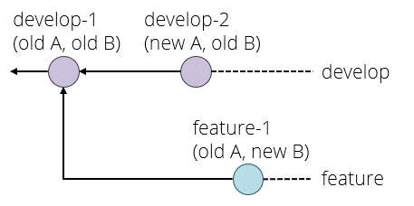

Overview
This page contains the exercises for part 1 (the first 5 weeks) of COMS10012 Software Tools, namely
- 2 weeks of Posix
- 1 week of build tools
- 2 weeks of databases
Each week contains two activities, and each activity has videos to watch (on the main site for each activity) and a set of practical exercises supported by a lab class (on this site).
Activity 1
Videos
Before this activity, you should watch the following videos - most of them are quite short. The videos are hosted on Microsoft Streams, and you will need to authenticate and be registered on the unit to watch them.
| Video | Length |
|---|---|
| shell | 19 minutes |
| SSH | 7 minutes |
| Vagrant | 21 minutes |
| Package managers | 12 minutes |
Exercises
Secure shell
Secure shell (SSH) is a protocol to allow you to remotely log in to another computer, such as a lab machine. Everyone I know of who uses SSH uses the free OpenSSH implementation, which is standard on every linux distribution that I know of and is also available for Windows and Mac - and even for the mobile operating systems iOS and Android.
We will see in more detail how SSH manages connections later on, but for now imagine that it opens a network connection between your own machine, and a shell running on a different machine. When you type something, SSH encrypts this and sends it to the other machine which decrypts it and passes it to the shell (or any other program you're running); when the shell replies then SSH encrypts that and sends it back to you. For this to work, (Open)SSH is actually two programs:
sshis the client, which you run on your machine to connect to another machine.sshdis the server, or daemon in UNIX-speak. It runs in the background on the machine you want to connect to, and needs to be installed by the system administrator.
SSH uses TCP port 22 by default.
Check your client
First of all, let's check that the ssh client is working.
- Open a terminal on your own machine: linux, mac OS and windows subsystem for linux should be fine. Windows 10 CMD might work too if you have the windows version of openssh installed (for example if you have git installed which uses ssh behind the scenes).
- Type
ssh localhostand press ENTER. Several different things could happen:- If it asks for a password, then the ssh client is working, and a ssh server is running on your current machine. The password would be your user account password, but we don't actually want to log in again so cancel with Control+C.
- If it succeeds without a password, then the client is working and a ssh server is running on your machine and either you do not have a password, or you already have a key set up. Type
exitand press ENTER to get back to your previous shell. - If it shows "connection refused", then you have the ssh client correctly working but no server running on your own machine. This is not a problem, as we're trying to log in to the lab machines, so we need a client on our machine and a server on the lab machine.
- If it shows an error that ssh is not found, then you don't have (Open)SSH installed which is very unusual except on windows CMD - in which case please switch to using the windows subsystem for linux.
Connect to the lab
The lab machines have names it######.wks.bris.ac.uk where the hashes represent a number from 075637 up to 075912. However, not all of them will be working at any one time, if everyone connects to the same machine then it will quickly get overloaded, and for security reasons the lab machines are not directly accessible from the internet. Instead, we will use two other machines to connect:
- The bastion host
seis.bris.ac.uk. This is reachable over SSH from the internet, and is on a university network that lets you connect further to the lab machines. You should not attempt to do any work on seis itself, as most of the software you would like to use (like compilers) is not installed there. However, you do have a home directory on seis for storing things like SSH keys. - The load balancer
rd-mvb-linuxlab.bristol.ac.uk. This connects you to a lab machine that is currently running and ensures that if everyone uses this method to connect, then they will be more or less equally distributed among the running machines.
Try the following:
- On your terminal, type
ssh USERNAME@seis.bris.ac.ukwhere you replace USERNAME with your university username, e.g.aa20123. Obviously, you will need a working internet connection for this. - If it asks you whether you are sure, type
yesand press ENTER. SSH will only do this the first time you connect to a machine that you have never used before. - When prompted, enter your university password and press ENTER.
- You should now see the prompt on seis, which looks something like
-bash-4.2$. Try the commanduname -ato print information about the system (uname on its own prints the operating system name,-ashows "all" information). The reply line should startLinux seis-shell, which is the operating system and host name. - On the seis prompt, type
ssh rd-mvb-linuxlab.bristol.ac.uk. This might take a few seconds; say yes if it asks you if you're sure, then enter your password again when prompted. We didn't have to give a username again because you are already logged in to seis with your university username (whoamishows this) and when you ssh without giving a username, it uses the one you are currently logged in as. - You should now be connected to a lab machine, with a prompt of the form
USERNAME@it######:~$. - Try
whoamianduname -ato check who you are logged in as, and where; also tryhostnamewhich just prints the machine name. - Type
exittwice to get back to your own machine. (Once gets you back to seis, twice closes the ssh connection completely.)
Connecting to one machine through another machine (in this case seis) as a proxy is such a common use case that ssh in fact has an option for it. Note however that this will not normally work from a windows CMD terminal, although it does work on Windows Subsystem for Linux (and on Mac and Linux).
ssh -J USERNAME@seis.bris.ac.uk USERNAME@rd-mvb-linuxlab.bristol.ac.uk
The -J for "jump through this host" even accepts a comma-separated list of hosts if you need to connect through more than one. However, you need to repeat your username for every machine.
You now know how to log in to a lab machine, but in both methods you had to type your password twice - let's make that easier. The answer is not to store your password in a file, but to use keys instead.
Setting up ssh keys
When you connect to a machine, the client on your computer and the daemon on the machine you're logging in to run a cryptographic protocol to exchange keys and set up a shared secret key for the session, so that what one side encrypts the other side can decrypt again. It also authenticates you to the server using one of several methods.
You might have heard from a security source that there are three main authentication factors: something you know (password or PIN), something you have (physical key, digital key, ID card, passport) and something you are (biometrics). An authentication method that requires two of these is called two-factor authentication and this is considered good security practice. For ssh, this means:
- You can log in with a username and password, that is "something you know". This is the default, but not the most secure.
- You can log in with a (digital) key, that is "something you have". This is more secure, as long as your key (which is just a file) doesn't get into the wrong hands, and also the most convenient as you can log into a lab machine or copy files without having to type your password.
- You can log in with a key file that is itself protected with a password. This gets you two-factor authentication.
The keys that SSH uses implement digital signatures. Each key comes as a pair of files:
- A private key (also known as secret key) in a file normally named
id_CIPHERwhere CIPHER is the cipher in use. You need to keep this secure and only store it in places that only you have access to. - A public key in a file normally named
id_CIPHER.pub. You can share this with the world, and you will need to store a copy of it on any machine or with any service that you want to log in to (for the lab, because the lab machines all share a file system, you only need to store it once - but seis has a separate file system so you need a separate copy there).
Let's create a key pair:
- Type the command
ssh-keygen -t ed25519. (If you get an "unknown key type" error, then you are using an outdated version of OpenSSH and for security reasons you should upgrade immediately.) Note: typeed25519directly, do not replace this with your username. It stands for the "Edwards curve over the prime2^255-19" cryptographic group, if you want to know. - When it asks you where to save the file, just press ENTER to accept the default, but make a note of the path - normally it's a folder
.sshin your home directory. - If it asks you "Overwrite (y/n)", say no (n, then ENTER) as it means you already have a key for something else - either ssh directly or something that uses it, like github. Restart key generation but pick a different file name.
- When it asks you for a password, I recommend that you just press ENTER which doesn't set a password (good security, maximum convenience). If you do set a password, it will ask you to type it twice and then you will need the password and the key file to use this key (maximum security, less convenient).
The -t parameter selects the cryptographic algorithm to use, in this case ed25519, which is modern, peer-reviewed, and generally considered one of the most secure public-key algorithms available. However some older ssh versions don't accept ed25519.
If you ever need to use SSH keys to a machine that doesn't like ed25519, then use the key type "rsa" instead. I would personally avoid the alternatives "dsa" and "ecdsa" if at all possible as there is speculation among cryptographers that there may be a flaw in the design.
For example, although seis supports ed25519, the old cs bastion host snowy.cs.bris.ac.uk still uses an older version of SSH, so you would need to generate a rsa key to connect to that.
Have a look at the folder where your keys are stored. ls -l ~/.ssh will do this, unless you chose somewhere else to store them when you created them:
-rw-------. 1 vagrant vagrant 411 Oct 7 10:50 id_ed25519
-rw-r--r--. 1 vagrant vagrant 98 Oct 7 10:50 id_ed25519.pub
-rw-r--r--. 1 vagrant vagrant 1597 Oct 7 11:54 known_hosts
Note the permissions on these files in my example. The private key (first line) has a permissions line at the start of (-)(rw-)(---)(---) where I've added brackets to make clearer what is going on. The first bracket only applies to special file types (e.g. d for directory). Next, the owner permissions which are in this case read and write (the third one would be x if the file were an executable program). The last two brackets are the permissions for the group and for everyone else, and these are all off so no-one except yourself (and root) can read your key file. OpenSSH is picky about this and will refuse to use a private key that other people have access to.
The public key permissions are (-)(rw-)(r--)(r--) which means that the owner can read and write, and the group and everyone else (assuming they have access to the folder) can read the public key, which is fine. It's a public key after all.
known_hosts is where SSH stores the public keys of computers you've already connected to: every time you answer yes to an "Are you sure you want to connect?" question when you connect to a new computer for the first time, it stores the result in this file and won't ask you again the next time. The file format is one key per line and you can edit the file yourself if you want to.
Set up key access on seis
First, we need to upload our public key to the ~/.ssh directory on seis. Even before this, we need to make sure the directory exists though:
- Log in to seis with ssh and your password.
- Try
ls -al ~/.ssh. If it complains the folder doesn't exist, create it withmkdir ~/.ssh. - Log out of seis again with
exit.
The command for copying a file is scp for secure copy, which works like cp but allows you to include remote hosts and does the copy over SSH. Run this from your own machine:
scp ~/.ssh/id_ed25519.pub "USERNAME@seis.bris.ac.uk:~/.ssh/"
Obviously, replace USERNAME with your university username. This will ask for your password again. Note two things here: first, to set up access on seis, we are uploading the public key - not the private key! - and secondly, that we put double quotes around the destination. This is because the ~ character meaning home directory is handled by our shell, but we don't want our local shell to expand it, instead we want the shell on seis launched by scp to expand it to our home directory on that machine.
The general syntax of scp is scp source destination and source or destination may be of the form [USERNAME@]HOSTNAME:PATH - if it contains a colon (:), then it refers to a file on a different machine.
Now log in to seis over ssh and type your password one last time. Then run the following:
cd .ssh
cat id_ed25519.pub >> authorized_keys
chmod 600 authorized_keys
SSH will accept a public key if it is listed in the file authorized_keys in the user's .ssh folder, the format is one line per key. Instead of just copying id_ed25519.pub to authorized_keys, which would overwrite the latter file if it already existed, we use the construction cat SOURCE >> DEST to have our shell append the source file to the destination.
However, if the authorised keys file didn't exist already, then it has now been created with default permissions and SSH won't accept that for security reasons. chmod means change permissions (also known as "mod bits") and 600 is the bit pattern we want in base 8, because that is how permissions work for historical reasons. Permissions are a bitfield of 9 bits, the first three are read/write/execute for the owner, the next three the same for the group, and then for everyone else. If you ls -l you will see this in a slightly more human-readable format, namely rw------- where a minus means that a bit is turned off.
Now type exit to get back to your own machine, and then ssh USERNAME@seis.bris.ac.uk to log back in to seis. It should log you in without asking for a password, and you have now set up key-based SSH authentication for seis.
Note: if you set a password on your SSH key earlier, then it will ask you for a password, and it will expect the key password not your uni password. You know not to ever reuse your uni password for anything else, right?
If for some reason something doesn't work with ssh, the first thing to try is to add the -v switch enable debugging information (you can even do -vv or -vvv to see even more detail, but we don't need that). If there is a problem with the permissions on your private key file for example, then you will see SSH complain in the debugging information.
Setting up keys for lab machines
You can now get into seis with a key, but you want to be on a lab machine to get work done.
To connect from your machine to seis, you need a private key on your machine and a public key on seis. To connect from seis to a lab machine, it would seem like you need a public key on the lab machine and a private key on seis. You do not want to upload your private key to seis though for security reasons, so instead we are going to use a SSH feature called agent forwarding which means that if you SSH into one machine, then when you try and SSH further into another machine SSH will reuse the same key. The way to do this is to use the -A command line flag.
The point of key-based authentication is that your private key never leaves your own machine, so even university administrators never get to see it, which would not be guaranteed if you stored a copy on a university machine.
Logging in to a machine does not send the key to that machine. Instead, the machine sends you a challenge - a long random number - and SSH digitally signs that with the private key on your own machine, and sends the signature back which the remote machine can verify with the public key. Seeing a signature like this does not let the machine create further signatures on your behalf, and it definitely does not reveal the key.
What agent forwarding does is it allows challenges and signatures to be forwarded across multiple connections, but the key never leaves your own machine.
This way, you can create one SSH key and use it for university, github and anything else that you access over SSH, and even if one service is breached then this does not give the attacker access to your accounts on the other services.
- Log in to seis with
ssh USERNAME@seis.bris.ac.uk. You should not need a password anymore. - Log in to the lab machines with
ssh rd-mvb-linuxlab.bristol.ac.ukand enter your password. Check that the~/.sshfolder exists and create it if it doesn't, as you did before on seis, thenexitagain to seis. - Copy your public key file from seis to the lab machines with
scp ~/.ssh/id_ed25519.pub "rd-mvb-linuxlab.bristol.ac.uk:~/.ssh/". This will ask for your password again. - Log in to a lab machine with
ssh rd-mvb-linuxlab.bristol.ac.ukand enter your password one last time. On the lab machine, install the public key with the following:
cd .ssh
cat id_ed25519.pub >> authorized_keys
chmod 600 authorized_keys
- Log out of the lab machine and seis again by typing
exittwice.
The steps above were necessary because your home directory on seis is not the same as on the lab machines. However, your home directory is the same across all lab machines, so you don't need to install the key on each one separately. You might have noticed that when copying or ssh-ing from seis to the lab machines, you don't have to repeat your username: this is because it is the same on all these machines.
From now on, from you own machine, you should be able to get directly into a lab machine with the following command, which should not ask for your password at all:
ssh -A -J USERNAME@seis.bris.ac.uk USERNAME@rd-mvb-linuxlab.bristol.ac.uk
Unfortunately, -J will not work on a windows CMD terminal, although it should work on Windows Subsystem for Linux. Once we have set up a configuration file, there will be a way to work around this problem. Mac and linux users should be fine though, as should anyone running these commands from an Alpine VM on their own machine, whatever their host OS.
Setting up a configuration file
You now have a log in command that works, but you still have to type a lot, and you need to type your username twice. We can improve this by using a configuration file.
SSH reads two configuration files: one for all users at /etc/ssh/ssh_config (/etc is where POSIX programs typically store global settings) and a per-user one at ~/.ssh/config. The site https://www.ssh.com/ssh/config/ or just man ssh_config | less on a terminal contain the documentation (man means manual page, and less is a program that shows a file on page at a time and lets you scroll and search).
Create a file called simply config in your .ssh directory on your own machine. You can do this for example with touch config (make sure you're in the .ssh directory first, cd ~/.ssh gets you there), and then editing it in your favourite text editor. Add the following lines, replacing USERNAME with your username twice:
Host seis
HostName seis.bris.ac.uk
User USERNAME
Host lab
HostName rd-mvb-linuxlab.bristol.ac.uk
ProxyJump seis
User USERNAME
This now lets you use simply ssh lab to log in to a lab machine via seis (agent forwarding is implied when you use ProxyJump), or ssh seis if you want to access seis directly for example to update your keys there.
- Try
ssh labfrom your own machine. This will be your main way to log in to a lab machine from now onwards.
If you want to learn another useful skill as you go along, here is one way to edit files on the command line. Many linux distributions have an editor called nano built in which runs in the terminal, so nano config edits the file called config (creating it if it doesn't exist, when you save for the first time). It is fairly self-explanatory, the command Control+X quits as you can see on the command bar at the bottom of the screen in nano and if you quit with unsaved changes, it will ask you if you want to save.
Nano is installed on seis and on the lab machines, so you can use it to edit a file remotely.
However, nano is not installed by default on alpine linux which we will be using for a lot of this unit - you can install it yourself with sudo apk add nano.
And something for Windows users:
If you are on Windows and are using OpenSSH through a CMD terminal, a bug in OpenSSH prevents the -J option from working. However, you can write your file like this instead:
# ~/.ssh/config file for WINDOWS CMD users only
Host seis
HostName seis.bris.ac.uk
User USERNAME
Host lab
HostName rd-mvb-linuxlab.bristol.ac.uk
ProxyCommand ssh.exe -W %h:%p seis
User USERNAME
This should get ssh lab to work for you as well.
Using different keys
You do not need this for the lab, but if you are ever managing different systems and accounts then you might use a different key file for each one. In this case, ssh on the command line lets you do -i FILENAME to select a private key file, and in the configuration file you can select a file for a particular host with the IdentityFile FILENAME line. By default, ssh will search for files in .ssh with names id_CIPHER, as you can see if you launch a connection with the -vv parameter which shows detailed debugging information.
Installing vagrant and alpine linux
Vagrant is a program to manage virtual machines (VMs). Based on a configuration file called a Vagrantfile, it can download and configure disk images, which it calles boxes, and call other programs to run them. Vagrant does not run the VM by itself, so you will need another program like virtualbox for that.
Installing on your own machine
To use vagrant on your own machine (recommended), follow these steps:
- Go to https://www.vagrantup.com/downloads and download the version of vagrant for your operating system. Windows, Mac OS and common versions of linux are supported.
- Download and install virtualbox from https://www.virtualbox.org/wiki/Downloads.
- Reboot your machine.
If you are on linux, you can of course also install the programs from your distribution's repository. Vagrant's developers actually recommend against this because they claim that some distributions package outdated versions, but it is your choice.
Configuring a box
Next, you are going to configure a virtual machine using alpine linux, a minimal linux distribution that we will be using in this unit.
- Create an empty folder somewhere.
- In that folder, create a file called Vagrantfile (capitalised, and with no extension) and add the following lines to it - or just download the file from here:
Vagrant.configure("2") do |config|
config.vm.box = "generic/alpine314"
config.vm.synced_folder ".", "/vagrant"
config.vm.provision "shell", inline: <<-SHELL
apk add libc6-compat
SHELL
end
This configuration file is actually a script in the ruby programming language, but you don't need to learn that to use vagrant. Let's look at what it does.
config.vm.boxselects the virtual machine image, or box in vagrant-speak, to use. You can see a list of available ones at https://app.vagrantup.com/boxes/search.config.vm.synced_foldersets up a shared folder between the guest (virtual machine) and host (your machine).- The
config.vm.provisionruns a provisioning command when the box is first downloaded and installed. These commands run as root on the virtual machine, and in this case we are using theapkpackage manager (we will talk about this later on) to install the packageslibc6-compat. - The
<<-SHELLconstruction is called a "here document", and is a way in some programming languages of writing multi-line strings. It tells ruby to treat everything until the closing keyword SHELL (which is arbitrary) as a string, which can contain several lines.
Alpine linux uses the musl libc distribution, which is smaller than and has a few distinct differences from the normal GNU libc. To avoid these incompatibilities causing you hard-to-find problems when you are compiling C programs, we are installing libc6-compat that makes alpine compatible with the standard libc.
Running vagrant
- Open a terminal in the folder containing the Vagrantfile. If you are on windows, both the windows CMD and the windows subsystem for linux terminal will work equally well for this purpose.
- Run the command
vagrant up. This starts the virtual machine configured in the current folder, and if it has not been downloaded and provisioned yet (as is the case when you runupfor the first time) then it does this for you as well. - When vagrant tells you the machine is running, run
vagrant sshto log in to your virtual machine. If it asks you for a password, usevagrant. - You should now see the virtual machine prompt
alpine310:~$. Try the commandls /and check that there is a folder called vagrant in the top-level folder, along with system ones with names likeusrandbin.
There are two kinds of errors you might get during vagrant up:
- If vagrant complains that it can't find a provider, then you have probably not installed virtualbox, or not rebooted since installing it.
- If you get some odd crash or error message about hypervisors, see the page https://www.vagrantup.com/docs/installation for instructions, section Running Multiple Hypervisors. Basically, you cannot run vagrant when another program is already using your processor's virtualisation subsystem, and the page gives instructions how to turn off the other one.
Shutting down cleanly
To exit the virtual machine, type exit which will get you back to the shell on the host machine. On the host, vagrant halt cleanly shuts down the virtual machine.
Promise yourself that you will always do this before turning off your computer, if you have been using vagrant!
Running on a lab machine
Vagrant is already installed on the lab machines in MVB 2.11, so you can remotely log in and launch a box from there. This will get you exactly the same alpine environment as if you run on your own machine, and everyone should try this out too. If for some reason you cannot run vagrant on your machine, then as long as you have an internet connection you should still be able to run it on the lab machines.
First, we connect to a lab machine: open a terminal and run the command ssh lab that you configured in the previous section on SSH.
On the lab machine, we need to create a folder and load a Vagrantfile as above, but let's download the Vagrantfile from the unit webpage instead of typing it out. Run the following shell commands (the third one starting wget must be all on one line, even if your web browser has added a line break):
mkdir softwaretools
cd softwaretools
wget https://raw.githubusercontent.com/cs-uob/COMS10012/master/exercises/part1/src/resources/Vagrantfile
You can call the top folder (softwaretools) anything you like and put it anywhere you want. You can now run vagrant up followed by vagrant ssh from inside that folder.
When you vagrant up, vagrant internally connects port 22 on the guest (which sshd on the guest is listening to) to port 2222 on the host. When you provision a vagrant machine, this creates a key pair on the host and loads the public key into the guest. The private key is actually in the file .vagrant/machines/default/virtualbox/private_key on the host, and the public key in /home/vagrant/.ssh/authorized_keys on the guest. So what vagrant ssh does is launch ssh -i KEYFILE vagrant@localhost -p 2222.
Warning about lab machines - read carefully!
Your files in your home directory on a lab machine are stored in a network folder, so that you see the same files whichever lab machine you log in to; they are also automatically backed up.
If lots of students created lots of VMs in their home folders, this would take up lots of space, and it would be slow: running an operating system over a network share causes both bandwidth and latency problems.
Instead, IT has configured vagrant on the lab machines to store VMs in the /tmp folder which is local to each machine. This means that:
- If you log in to a different lab machine, your VMs will be gone.
- If you log in to the same lab machine but it has restarted since you last logged in, your VMs will be gone.
- Your VMs, and with them any files you store in the VM itself, are not backed up.
This is not as much a problem as it seems because this is how virtual machines are meant to work: if one is not available, vagrant downloads and provisions it. For this reason, for any software you want installed on your VMs in the lab machines, you should write the install command into the provisioning script in the Vagrantfile so it will be re-installed the next time Vagrant has to set up the VM. We will learn how to do this soon.
However, this still leaves files that you create on the VM itself, such as the ones you will create for the exercises in this unit. The basic warning is that any files in your home directory will be lost when the VM is rebuilt. That is why we have set up a shared folder which you can access as /vagrant on the VM, which maps to the folder containing your Vagrantfile on the host machine. Because this is stored under your home folder on the lab machine, it lives on the network file store and so it is backed up and available from all lab machines.
So whenever you log in to a VM on a lab machine to do some work, you should cd /vagrant and use that instead of your home folder for any files that you don't want to lose. If you are running vagrant on your own computer, then nothing will be deleted except if you give vagrant a command to rebuild the VM yourself.
Alpine linux system administration
Start your alpine box if necessary by going to the folder with the Vagrantfile in your terminal, and typing vagrant up. Log in to your alpine linux box with vagrant ssh. We are going to get to know linux in general and alpine in particular a bit.
The file system
Linux (and other POSIX-like operating systems) work with a single file hierarchy with a root folder /, although there may be different file systems mounted at different places under that. How files are organised in here are documented in the Filesystem Hierarchy Standard (FHS). Have a look with the command ls /:
/bin stands for binaries, that is programs that you can run. Have a look with ls /bin: there will be a lot of commands in here, including ls itself. Indeed you can find out where a program is with which, so which ls will show you /bin/ls for example.
If you have colours turned on (which is the default) you will see that a couple of files like bash are green, but the rest are blue - this indicates the file type, green is an executable program, blue is a link to another file. Have a look with ls -l /bin: the very first character of each line indicates the file type, the main ones being - for normal file, d for directory and l for a so-called soft link.
Note that, as you can see on the last entry of each line, most files here are links to /bin/busybox! Busybox is, in its own words:
BusyBox is a multi-call binary that combines many common Unix utilities into a single executable. Most people will create a link to busybox for each function they wish to use and BusyBox will act like whatever it was invoked as. (from
busybox --help)
Busybox is a distribution of the many common POSIX commands (you can see which ones with busybox --help) packed into a single program. This means that you can run for example busybox ls to run the ls command. However, when you call ls directly, your shell runs the /bin/ls command, which is just a link to busybox.
How does busybox know which command you want?
Remember that in C, each program's main function can take an argument vector char **argv and that argv[0] is the name of the file that was used to call the program - this is what busybox looks at when you call ls or any of the other linked programs in /bin.
Busybox is used in alpine linux because alpine is a minimal linux distribution and busybox is a minimal implementation of lots of common commands. As a result, the alpine/busybox version of say ls might not have as many options as the ls on the lab machines.
Back to ls / and the folders in the root folder. /etc stores system-wide configuration files and typically only root (the administrator account) can change things in here. For example, system-wide ssh configuration lives in /etc/ssh.
/lib contains dynamic libraries - windows calls these .dll files, POSIX uses .so. For example, /lib/libc.so.6 is the C library, which allows C programs to use functions like printf. You can see with ls -l /lib that the C library is actually a link to /lib/libc.musl-x86_64.so.1: musl is a minimal implementation of the C library, which is the version that alpine linux chose to use by default. From their website:
musl is an implementation of the C standard library built on top of the Linux system call API, including interfaces defined in the base language standard, POSIX, and widely agreed-upon extensions. musl is lightweight, fast, simple, free, and strives to be correct in the sense of standards-conformance and safety.
/home is the folder containing users' home directories, for example the default user vagrant gets /home/vagrant. The exception is root, the administrator account, who gets /root.
/sbin (system binaries) is another collection of programs, typically ones that only system administrators will use. For example, fdisk creates or deletes partitions on a disk and lots of programs with fs in their name deal with managing file systems. /sbin/halt, run as root (or another user that you have allowed to do this), shuts down the system; there is also /sbin/reboot.
/usr is a historical accident and a bit of a mess. A short history is on this stackexchange question but essentially, in the earliest days,
/binwas only for binaries needed to start the system - or at least the most important binaries that needed to live on the faster of several disk drives, like your shell./usr/binwas where most binaries lived which were available globally, for example across all machines in an organisation./usr/local/binwas for binaries installed by a local administrator, for example for a department within an organisation.
In any case, /usr and its subfolders are for normally read-only data, such as programs and configuration files but not temporary data or log files. It contains subfolders like /usr/bin or /usr/lib that duplicate folders in the root directory.
Ubuntu's way of cleaning this mess up is to make its /bin just a link to /usr/bin and putting everything in there. On alpine linux, there is still a distinction between the two, but most binaries in both folders are links to /bin/busybox anyway. For example, if you do which ls you find /bin/ls, but which which shows /usr/bin/which, but both of these are in fact just links to /bin/busybox.
/tmp is a temporary filesystem that may be stored in RAM instead of on disk (but swapped out if necessary), and that does not have to survive rebooting the machine.
/var holds files that vary over time, such as logs or caches.
/dev, /sys and /proc are virtual file systems. One of the UNIX design principles is that almost every interaction with the operating system should look to a program like reading and writing a file, or in short everything is a file. For example, /dev offers an interface to devices such as hard disks (/dev/sda is the first SCSI disk in the system, and /dev/sda1 the first partition on that), memory (/dev/mem), and a number of pseudoterminals or ttys that we will talk about later. /proc provides access to running processes; /sys provides access to system functions. For example, on some laptop systems, writing to /sys/class/backlight/acpi_video0/brightness changes the screen brightness.
The /vagrant folder is not part of the FHS, but is a convention for a shared folder with the host on vagrant virtual machines.
Package managers
Linux has had package managers and repositories since the days when it was distributed on floppy disks. A repository is a collection of software that you can install, and can be hosted anywhere - floppy disk, CD-ROM, DVD or nowadays on the internet. A package manager is software that installs packages from a repository - so far, this sounds just like an app store but a package manager can do more. For one thing, you can ask to install different versions of a particular package if you need to. But the main point of a package manager is that packages can have dependencies on other packages, and when you install one then it installs the dependencies automatically.
Nano is a basic text editor that works in the console, and is installed in most linux distributions including the ones on seis and the lab machines, so you can use it to edit files remotely. However, in alpine linux it is not installed by default: type nano and you get nano: command not found. You can install it with the command
sudo apk add nano
sudo(superuser do) allows you to run a command as root, also known as the administrator or superuser. Depending on how your system is configured, this might be not allowed at all (you can't do it on the lab machines), or require a password, but on the alpine/vagrant distribution you are allowed to do this. It is good practice to use sudo for system adminstration instead of logging in as root directly, but if you ever really need a root shell thensudo bashgets you one - with#instead of$as prompt to warn you that you are working as root.apkis the alpine linux package manager.add PACKAGEadds a package, which means download and install it and all its dependencies (nano is so small that it has none).
You can now do nano FILENAME to edit a file. The keyboard shortcuts are at the bottom of the screen, the main one you need is Control+X to exit (it will ask if you want to save, if you have unsaved changes).
Next, install git with sudo apk add git. Git requires two dependencies (apart from the ones already installed on the base system), as you can see in the output:
(1/3) Installing expat (2.2.8-r0)
(2/3) Installing pcre2 (10.33-r0)
(3/3) Installing git (2.22.4-r0)
expat is an XML parser (for configuration files) and pcre2 implements perl-compatible regular expressions for searching for text.
We can use apk to explore this further, try the following:
apk info gitshows information about the git package, including a short description and the website.apk info -a gitshows more information, including the dependencies (section "depends on", there are 5 listed but two are already part of the base system,libc.muslis the C library andlibzis a compression library similar to "zip") and a list of all files installed by the package.
Note how git is built out of a number of subcommands in /usr/libexec. For example, when you do git branch, that ends up calling /usr/libexec/git-core/git-branch.
The commands above did not require sudo as they do not change any files on the system.
Update and upgrade
The repositories that you are using are recorded in /etc/apk/repositories, have a look at this file with cat or nano to see where they are, then look up the sites in your browser. There are folders for different processor architectures (the one in use is stored in /etc/apk/arch) and these contain all the packages as well as a file APKINDEX.tar.gz that contains a list of all packages and versions.
Two commands a system adminstrator should run regularly for security reasons:
sudo apk updatefetches the new package list from the repository. This way, apk can tell you if any packages have been updated to new versions since you last checked.sudo apk upgradeupgrades every package that you already have installed to the latest version in your local package list (downloaded when you do anapk update).
Lab machines
If you are running a virtual machine on the lab machines, then your virtual machine might not be around after the lab machine reboots or you log out and in again and end up on a different machine - as the notice when you log in tells you, the virtual machines are stored under /tmp.
It would be annoying to have to reinstall your favourite packages every time you log in to a different machine, so you should put them in your Vagrantfile and then vagrant up will do this for you automatically. The Vagrantfile already contains a line apk add libc6-compat which installs a package by default - you can put as many as you like on this line separated by spaces. There is no sudo here because when vagrant is installing the system, it is running as root automatically.
- Add
nanoandgitto this line so next time you rebuild the vagrant machine, they are added automatically. - Log out of your vagrant machine and do a
vagrant destroywhich removes the virtual machine. Then reload withvagrant upwhich will download and provision the box again. - Log in with
vagrant sshand check that git and nano are installed.
For the next exercise, please also install the gcc package that gets you a C compiler, as well as musl-dev which contains header files like stdio.h. These, in case you wondered, live in /usr/include.
Shell expansion
This exercise is about studying shell expansion. You should run it on your alpine linux VM in vagrant, and you should have installed the gcc compiler.
Create a C program arguments.c with the following contents. You can use nano arguments.c for this, for example.
#include <stdio.h>
int main(int argc, char** argv) {
for(int i=0; i < argc; i++) {
printf("Argument #%i: [%s]\n", i, argv[i]);
}
return 0;
}
Compile this with gcc -Wall arguments.c -o arguments.
Whitespace
The program prints all its arguments, one per line. The program gets its arguments from the program that started it - in this case the shell. Try running the program with the following commands:
./arguments
./arguments hello
./arguments one two three
Now that you are familiar with what the program does, try the following:
./arguments one two
./arguments "one two"
./arguments "one two"
How, based on these examples, does the shell handle whitespace in the line you type?
Pattern matching
Try the following:
./arguments *in the folder that contains the arguments program, and its source code arguments.c.- Make an empty subfolder with
mkdir empty, switch to it withcd emptyand then run../arguments *. Since you are now in the subfolder, we need two dots at the start to say "run the program arguments in the folder above". What happens? - Go back to the folder with the program by running
cd ..and then dolsto check you're back in the right folder. In this folder, find three different ways to get the program to produce the following output:
Argument #0: [./arguments]
Argument #1: [*]
Files with spaces in their names
The command touch FILENAME creates a file. Create a file with a space in its name by typing touch "silly named file". What would happen if you left the quuotes off (you can try it, then do ls)?
Start typing ls sill and then press TAB to autocomplete. Assuming you have no other files whose name starts with sill, what happens? Use this method to get the arguments program to print the following:
Argument #0: [./arguments]
Argument #1: [Hello world!]
The command rm (remove) deletes files again. Use it to remove your file with spaces in its name, using one of several methods to get the shell to pass the spaces through to rm.
Shell variables
In the shell, VARIABLE=VALUE sets a variable to a value and $VARIABLE retrieves its value. For example, to save typing a filename twice:
p=arguments
gcc -Wall $p.c -o $p
which expands to gcc -Wall arguments.c -o arguments. If you want to use a variable inside a word, you can use curly braces: ${a}b means the value of the variable a followed by the letter b, whereas $ab would mean the value of the variable ab.
It is good practice to double-quote variables used like this, because if you tried for example to compile a program called silly name.c with a space in its name, then
program="silly name"
gcc -Wall $program.c -o $program
would expand to
gcc -Wall silly name.c -o silly name
and this would confuse your compiler because you are telling it to compile three source files called silly, name.c and name to a program called silly. Correct would be:
program="silly name"
gcc -Wall "$program.c" -o "$program"
which expands to
gcc -Wall "silly name.c" -o "silly name"
which does what you want - if you indeed want a program with a space in its name!
There is no harm in double-quoting a shell variable every time you want to use it, and this is good practice as it still works if the variable is set to a value that contains spaces.
Note that we also had to quote setting the variable name in the first place, because
program=silly name
would translate as: set the variable program to the value silly, then execute the program name. Variable assignments only apply to the first argument following them, although you can assign more than one variable.
Note that this does not work as expected either:
file=arguments gcc -Wall "$file.c" -o "$file"
The problem here is that the shell first reads the line and substitutes in the value of $file (unset variables expand to the empty string by default) before starting to execute the command, so you are reading the variable's value before writing it. Leaving off the quotes doesn't help: you need to set the variable on a separate line.
Activity 2
Videos
| Video | Length |
|---|---|
| Permissions 1 | 27 minutes |
| Permissions 2 | 22 minutes |
| Pipes 1 | 18 minutes |
| Pipes 2 | 18 minutes |
Exercises
File permissions
Log in to your vagrant VM for the following exercises.
Show the current user
First, use the command whoami to see the current user name: it should be vagrant.
For this exercise it will be useful to display the user in the prompt, so do sudo nano /etc/profile. This file is a configuration file that is read by the shell when it starts up. Notice the lines:
export CHARSET=UTF-8
export LANG=C.UTF-8
export PATH=/usr/local/sbin:/usr/local/bin:/usr/sbin:/usr/bin:/sbin:/bin
export PAGER=less
export PS1='\h:\w\$ '
umask 022
The export ones set environment variables, for example the default PATH where the shell looks for programs. The PAGER is what programs such as the manual page viewer (man) use to display information one page at a time.
The PS1 (prompt level 1) controls your shell prompt. Here \h means the hostname, \w the working directory and \$ is the appropriate prompt symbol ($ for normal users, # for root). This gets you a default prompt that looks like alpine310:~$ (note the space after the dollar sign, which is also in the PS1). Let's add the username: change the line to export PS1='\u@\h:\w\$ '. When you log out and in again, your prompt will now be vagrant@alpine310:~$ .
While you're here, you can export EDITOR=nano so that every user gets nano instead of vi as their default editor. Then save the file (Control+X in nano).
- Research online what
umask 022does, note that the number is in base 8.
Create a user and a group
Create a new user with sudo adduser NAME - I'm going to be using fred as an example name in these notes. When it asks for a password, you can just use fred or something; it will complain about the password being too short but it will create the user anyway.
Check the user and group files with tail /etc/passwd and tail /etc/group to check that the new user has been created - tail displays the last 10 lines of a file by default; tail -n N FILE would display the last N lines. Your new user fred (or whatever you called them) should appear in both files. Also check with ls -l /home that the home directory for Fred exists and is set to the correct user and group.
Time to change user: su fred and enter the password. Notice that the prompt has changed to fred@alpine310:/home/vagrant$ (at least if you started off in that folder). So the user has changed, and because /home/vagrant is no longer the current user's home directory, it gets written out in full. Run cd to go home followed by pwd and check that you are now in /home/fred or whatever you called your new user.
Next, create a user george (or some other name) add both your two new users, but not vagrant, to the group users (which already exists) as described in the video. Note: fred cannot use sudo, so you have to exit his terminal to get back to one running as vagrant for this.
Explore file permissions
As user fred (or whatever you called your first new user), set up your home directory using what you learnt in the videos so that
- You can do everything (rwx).
- Members of the
usersgroup can list files and change to your home directory, but not add/remove files. You will need to change the group of your home directory tousersfor this, as described in the videos. - Everyone else cannot do anything with your home directory.
Create a file in your home directory, e.g. nano readme.txt then add some content.
Check, by using su USERNAME to log in as the different users, that:
georgecan view Fred's home directory but not create files there;georgecan view but not edit Fred's readme file;vagrantcannot list files in or enter Fred's home directory at all. What happens when you try?
Of course, vagrant can use sudo to get around all these restrictions. Permissions do not protect you from anyone who can become root.
Also as fred, make a private subdirectory in your home folder that no-one but you can access (read, write or execute). Create a file secret.txt in there with nano private/secret.txt as user fred from Fred's home directory, and put something in it. Do not change any permissions on secret.txt itself.
Check as George that you can see the folder itself, but not cd into it nor list the file. Check that even knowing the file name (cat /home/fred/private/secret.txt) as George doesn't work.
Using ls -l as Fred in both ~ and ~/private, compare the entries for the files ~/readme.txt, ~/private/secret.txt and the folder ~/private. Why do the groups of the two files differ?
Note that, even though the secret file has read permissions for everyone by default, George cannot read it. The rule is that you need permissions on the whole path from / to a file to be able to access it.
This is another reminder that if you want to store coursework on a lab machine, then put it in a folder that is only accessible to you. Other students can read your home directory by default, and they would be able to steal your work and submit it as their own otherwise: this has happened in the past.
Altenatively you could remove permissions from everyone else on your home directory there, but this prevents you from being able to share files in specific folders that you do want to share with other students.
Setuid
We are going to create a file to let George (and others in the users group) send Fred messages which go in a file in his home directory.
As Fred, create a file message-fred.c in your home directory and add the following lines:
#include <stdio.h>
#include <stdlib.h>
const char *filename ="/home/fred/messages.txt";
int main(int argc, char **argv) {
if (argc != 2) {
puts("Usage: message-fred MESSAGE");
return 1;
}
FILE *file = fopen(filename, "a");
if (file == NULL) {
puts("Error opening file");
return 2;
}
int r = fputs(argv[1], file);
if (r == EOF) {
puts("Error writing message");
return 2;
}
r = fputc('\n', file);
if (r == EOF) {
puts("Error writing newline");
return 2;
}
fclose(file);
return 0;
}
Compile it with gcc -Wall message-fred.c -o message-fred (you should not get any warnings) and check with ls -l, you will see a line like
-rwxr-xr-x 1 fred fred 19984 Oct 28 13:26 message-fred
These are the default permissions for a newly created executable file; note that gcc has set the three +x bits for you. Still as Fred, run chmod u+s message-fred and check the file again: you should now see -rwsr-xr-x for the file permissions. The s is the setuid bit.
As George (su george), go into Fred's home directory and run ./message-fred "Hi from George!". The quotes are needed here because the program accepts only a single argument.
Now run ls -l and notice that a messages.txt has appeared with owner and group fred. Check the contents with cat messages.txt. Although George cannot create and edit files in Fred's home directory himself (he can't edit messages.txt for example, although he can read it), the program message-fred ran as Fred, which let it create the file. George can send another message like this (./message-fred "Hi again!"), which gets appended to the file: try this out.
This shows how setuid programs can be used to allow other users to selectively perform specific tasks under a different user account.
Warning: writing your own setuid programs is extremely dangerous if you don't know the basics of secure coding and hacking C programs, because a bug in such a program could let someone take over your user account. The absolute minimum you should know is the contents of our security units up to and including 4th year.
A general task for a security analyst might be finding all files with the setuid bit set on a system. You can try this yourself, but return to a vagrant shell first so that you're allowed to use sudo:
sudo find / -perm /4000
You might get some errors relating to /proc files, which you can ignore: these are subprocesses that find uses to look at individual files.
Apart from message-fred, on alpine there are four such files by default: sudo, mount, umount and bbsuid. The first one you already know; look up what the next two do and think about why they are setuid. Specifically, what kinds of (un)mounting are non-root users allowed to do according to the manual pages?
The last one is busybox' general-purpose setuid helper. For example,
ls -l /bin | grep bbsuid
shows that /bin/su is in fact a link to bbsuid on this system (a symlink to a setuid program inherits the setuid property). grep STRING here filters its input and only returns lines containing the string (or regular expression).
Have a look at the output of the following:
ls -l /usr/bin | grep bbsuid
Look up what these programs do and think about why they have to be setuid root.
Also have a look at the source code of bbsuid: it's only around 100 lines of C and all it does is check that you're calling it from an approved filename, then launch busybox (still as root) to handle the command. The check is important because anyone can make a symlink to bbsuid and call it say rm, and if bbsuid didn't check for this then it would allow anyone to remove any file on the system as root.
Sudo
Make sure your terminal is running as fred and try a sudo ls. You will see a general message, you will be asked for your password, and then you will get the error fred is not in the sudoers file. This incident will be reported. (This means that an entry has been logged in /var/log/messages.)
So, fred can currently not use sudo. Switch back to vagrant and run the command sudo cat /etc/sudoers. Everything is commented out except root ALL=(ALL) ALL and the last line #includedir /etc/sudoers.d (this is not a comment!) which contains a single file vagrant with the line vagrant ALL=(ALL) NOPASSWD: ALL which is why vagrant can use sudo in the first place.
However, note the commented lines such as
# %wheel ALL=(ALL) NOPASSWD: ALL
# %sudo ALL=(ALL) ALL
If uncommented, the first one would let everyone in group wheel run commands using sudo (this is the default on some other linux distributions), whereas the second one would allow everyone in the group sudo to do this, but would prompt for their own password beforehand.
Let's allow people in the users group to reboot the machine. Open a root shell with sudo su as vagrant; this is so we don't get locked out if we break sudo.
Edit the sudoers file with nano /etc/sudoers as root, and add the following line:
%users ALL=(ALL) /sbin/reboot
and save the sudoers file.
If you read the comment at the top of the file, it suggests using visudo to edit the file. Since we don't want to use vi, we can instead check the syntax with visudo -c and check that we get "parsed OK"; if not then we edit the file again to fix it (this is why we opened a root shell: if there's a syntax error in the file, sudo would refuse to run at all).
You can now switch back to fred (check the prompt to make sure you are Fred) and do sudo reboot. After asking for Fred's password, the virtual machine will now reboot, which you notice because you get kicked out of your ssh connection. Another vagrant ssh after a few seconds will get you back in again.
After rebooting, your /vagrant shared folder might not work. In this case, log out and do vagrant halt then vagrant up and vagrant ssh again on the host machine.
When vagrant boots your VM, it automatically sets up the shared folder, but this doesn't always work if you reboot the VM yourself.
Pipes
The command ls | head runs ls and head and pipes the standard output of ls into the standard input of head.
The following shell commands are particularly useful in pipes:
cat [FILENAME [FILENAME...]]writes the contents of one or more files to standard output. This is a good way of starting a pipe. If you leave off all the filenames, cat just reads its standard input and writes it to standard output.head [-n N]reads its standard input and writes only the first N lines (default is 10 if you leave the option off) to standard output. You can also put a minus before the argument e.g.head -n -2to skip the last 2 lines and write all the rest.tail [-n N]is like head except that it writes the last N lines (with a minus, it skips the first N ones).sortreads all its standard input into a memory buffer, then sorts the lines and writes them all to standard output.uniqreads standard input and writes to standard output, but skips repeated lines that immediately follow each other, for example if there are three lines A, A, B then it would only write A, B but if it gets A, B, A it would write all three. A common way to remove duplicate lines is... | sort | uniq | ....grep [-iv] EXPRESSIONreads standard input and prints only lines that match the regular expression to standard output. With-iit is case-insensitive, and with-vit only prints lines that do not match the expression.sed -e COMMANDreads lines from standard input, transforms them according to the command and writes the results to standard output.sedhas its own command language but the most common one iss/SOURCE/DEST/which changes substrings matching the source regular expression into the destination one.wc [-l]stands for word count, but with-lit counts lines instead. Putting awc -lon the very end of a pipe is useful if you just want to know how many results a particular command or pipe produces, assuming the results come one per line.
All these commands actually take an optional extra filename as argument, in which case they read from this file as input. For example, to display the first 10 lines of a file called Readme.txt, you could do either cat Readme.txt | head or head Readme.txt.
Word list exercises - pipes and regular expressions
Most linux distributions come with a dictionary file /usr/dict/words that contains a list of English words in alphabetical order, for use in spell-checking programs. The list includes a selection of proper nouns, for example countries and cities. Alpine linux, true to its principles of being minimal, omits this file - but you can download one yourself with
wget https://users.cs.duke.edu/~ola/ap/linuxwords -O words
wget is one of two utilities for downloading files, the other being curl. Note that the option for output file name is a capital O, not a lowercase o or a zero.
Find one-line commands, possibly with pipes, to print the following to your terminal. You can either start each command with cat words | ... or do it without cat by providing the words file as an argument to the first command in your pipeline.
If English is not your native language, ignore the guessing part - it is not assessed.
- The first word in the file. Can you guess what it will be, it is a city in Europe?
- The last word in the file. Can you guess this one, another city in Europe?
- The number of words in the words file - there is one word per line.
- The 6171st word in the file. Can you read my mind and guess this word directly?
- All words containing the letter Q, capitalised. (A regular expression containing a string of one or more letters matches all strings that contain the expression as a substring.)
- All words starting with the letter X. The regular expression
Xwould match an X anywhere in the word, but^Xmatches an X only at the start of the string. - All words ending in j. (The expression
'j$'matches a j only at the end of the string, but you have to single-quote it to stop the shell from interpreting the dollar sign). Can you guess the word - it is a city in eastern Europe? - The number of words containing the letter Q, ignoring case (e.g. capitalised or not).
- The first five words containing the letter sequence
cl. - All words containing the sequence "kp", but not "ckp". Can you guess any of these?
- The last 15 words of exactly two letters. The expression
.(period) matches a single character, and'^...$'for example would match all strings of the format exactly three characters between start and end of string. You need to quote it because of the dollar sign. - All words from the first 100 words on the list, which contain the letter y.
- The first five words that are among the last 100 words on the list, and contain the letter y (whether capitalised or not).
- All three-letter words with no vowels (aeiou).The regular expression
'[aeiou]'matches any string that contains one of the bracketed characters; you need quotes to stop the shell from interpreting the brackets. Remember to exclude words with capitalised vowels as well. There are 12 of these, can you guess them all before looking? - All words of exactly 7 letters, where the third one is an e and the word ends "-ded". This kind of search is really useful for crosswords. There are 9 words of this form, can you guess them?
Bonus regular expression question:
- Find all words that start with a P (whether capitalised or not), and contain at least four instances of the letter a. Putting a
*after something in a regular expression searches for any number of repetitions of this, including 0 so for example'a*'would find words with any number of the letter a, including 0 (which is not what you want here). You need single quotes to stop the shell from expanding the*. Can you guess the words? There are essentially four of them, two demonyms (for some reason one of them has a plural in the list, the other doesn't), and two nouns which are not proper nouns.
Activity: Git
Videos
| Video | Length |
|---|---|
| Git, part 1 | 21 minutes |
| Git, part 2 | 27 minutes |
| Git, part 3 | 19 minutes |
Exercises
Git, part 1
For this exercise, I am assuming that you are working on alpine linux and have nano, git and gcc with musl-dev installed as in the last exercise.
Configuring your identity
Run the following two lines to set up git correctly. You only need to do this once when you install git, but not every time you create a new repository.
git config --global user.name "YOURNAME"
git config --global user.email "YOUREMAIL"
where you obviously replace your name and email with something of your choice; I've put them in double quotes because this lets you include a space between your first and last names and the @ character in your email address.
This does not create a user account - git just uses your name and email to record the author in any commits you make, so you can put anything you like here (git will happily accept - as your email address, and it does not send you email). Of course, once you are working in a team with other students, you will probably want to use your real name so they know who has made which commits.
If you are running a VM on a lab machine, then you would need to reconfigure git every time vagrant rebuilds the VM, for example when you log in to a different lab machine. You can put these commands in your Vagrantfile, like anything else that you want to run when vagrant (re)builds your box, but they need to be run as the vagrant user and not the root user. So add the following block to your vagrantfile just before the end line, editing your name and email address obviously; the key point being the privileged: false entry which runs the commands as the vagrant user:
config.vm.provision :shell, privileged: false, inline: <<-SHELL
git config --global user.name "YOURNAME"
git config --global user.email "YOUREMAIL"
SHELL
Of course this will only work if git is installed, but you've added git to the apk add line in the previous provision block already so it will be installed.
A sample project and repository
Let's say you want to start developing a C program. Let's make a folder:
mkdir project1
cd project1
git init
The last command created an empty git repository in a subfolder called .git. We can check with git status to see whether there are any changes, and git reports nothing to commit.
Create a file, for example with nano main.c and add some sample content like this (you should be able to copy-paste into your terminal):
// file: main.c
#include <stdio.h>
int main() {
puts("Hi");
return 0;
}
If you install the nano-syntax package, you get syntax highlighting in nano, but you need to configure this first. The syntax files themselves live in /usr/share/nano, for example c.nanorc for the C language, but you have to include the ones you want in a file ~/.nanorc. For example, if this file contains the line include /usr/share/nano/c.nanorc then nano will do syntax highlighting on C files. You can turn this on and off with Alt+Y.
On another note - if you just want to print a simple string in C, then please use puts not printf. Printf with one argument is silly and, depending on how you write it, also insecure.
Do a git status and you will see main.c in red under untracked files - this is a new file that git does not know about yet. Do git add main.c followed by another git status and the file is now green under files to be committed.
Commit the file with git commit -m "first file" or something like that - you need double quotes if you want spaces in your commit message. Try git status again and you should see nothing to commit, working tree clean which means git is up to date with your files. Try git log and you will see that there is now one commit in the log.
Every git commit must have a commit message. You can either add one with the -m flag, or leave that off and git will drop you into the system default editor to write one. That is normally vi, which has a unique set of keyboard commands (the command to quit is :q followed by ENTER). You can run the shell command export EDITOR=nano to change your default editor, then a raw git commit will launch nano. If you want to keep this setting when you relaunch your shell next time you log in, then the export line has to go in a file called .profile in your home directory, which is a file that the bash shell processes when it starts up.
To keep a profile file around when vagrant rebuilds your VM if you're on a lab machine, I would put the file in /vagrant/.profile as that is backed up (it ends up in the folder on the host machine with the Vagrantfile) and then put the following command in your non-privileged provisioning block from the last advanced note: ln -s /vagrant/.profile /home/vagrant/.profile. This creates a soft link like you have already seen in /bin earlier.
Ignoring files
Compile your code with gcc main.c -o program, and check with ./program that it runs and prints Hi. (If you get an error that stdio.h doesn't exist, then you have installed gcc but not musl-dev which is the package that contains the header files.)
If you look at git status now, the program file shows as untracked, but we do not want to commit it: the repository works best when you store only your source code, and anyone who needs to can check out a copy and build from there. Among other things this means that people on different platforms e.g. linux and mac, intel and ARM and so on can each compile the version that works for them.
So we want to tell git to ignore the program and changes in it, which we do by creating a file called .gitignore and adding an expression on each line to say which file(s) or folders to ignore - you can use *.o to select all object code files, for example.
- Create a file
.gitignoreand add the single lineprogramto it. - Do another
git statusand notice that while the program is now ignored, the ignore file is marked as new. This file does belong in the repository, so add it and commit it. - Check that
git statusreports clean again, and thatgit logcontains two commits.
Commit and checkout
As you develop, you should regularly code, commit, repeat. To practice this, change Hi to Hello in the program, rebuild and run the program, then add and commit the source file again - check with git status at the end that you get clean again.
The command git add . adds all new and changed files and folders in the current folder in one go, and is typically the quickest way to add things when you want to commit all your changes since the last commit.
Sometimes you want to go back and look at another commit, or undo a commit that broke something - this is when you want a checkout.
- Use
git logto show the history of your commits. (When you have more than one screen,git log |lesslets you scroll.) - Note the first 6 or so characters of the commit hash of the commit where you added the ignore file, but before changing Hi to Hello. You need at least 6 characters, but only as many so that it's not ambiguous to git which commit you mean.
- Run
git checkout HASHwhere HASH is the 6 or however many you need characters of the commit in question. Git will print a warning about the HEAD pointer. - Check the source file, and notice that it is now back on Hi.
- Use
git checkout masterto return to the latest version of your files, and git will set up the HEAD pointer again ready to accept new commits.
If you actually want to undo a commit, then you have two options:
git revert HASHadds a new commit that returns the files to the state they were before the commit with the given hash. This is safe to use during team development, as it's just adding a new commit. If you have commits A, B and dogit revert Bthen you get a new commit C so anyone else using the repository sees a sequence of commits A, B, C; but the state of the files in C is the same as in A.git reset HASHundoes commits by moving the HEAD pointer back to the commit with the given hash, but leaves the working copy alone (you can use the--hardoption to change the files as well). This will break things if you have shared your newer commits with other developers, but it's safe to use to undo changes that you haven't pushed yet (we'll learn about this next time). The effect is as if the commits which you've reset had never happened.
Note: if you want to revert a commit because you accidentally commited a file with secret information, and you've already pushed the commit, then you also have to look up online how to "force push" your changes to erase all traces of the file on github (or other online providers). If the secret file contained any passwords, even if you reverted the commit immediately, then you should consider the passwords compromised and change them at once.
Git, part 2
In this exercise we will set up and use a git account on a remote provider. The "big 3" for hosting git repositories are:
This exercise is based on github, as this is the most popular provider, but you can use one of the other two if you want as well (the slides show the equivalent version for gitlab) - although the web user interface and some advanced features are different, interacting with all three on the command line is identical and all three offer unlimited private and public repositories (within reason).
Set things up
Go to github.com and register with a username, an e-mail address and a password. You might have to click a confirmation link in an e-mail sent to you.
We are going to use git over SSH, so you need to let git know your public key (remember, you never give anyone your private key!). Click the icon in the top right corner of the screen that represents your avatar (you can of course set a custom one if you like) and choose Settings in the menu, then on the settings page choose SSH and GPG keys.
Choose New SSH key, and paste your SSH public key in the Key box - this is the file ~/.ssh/id_ed25519.pub that you created in the last activity. (The file id_ed25519 without .pub in the same folder is your private key, and you never paste that anywhere.) Give your key a title if you like, then add it with the green button. Github supports all common SSH key formats, but will warn you if you do something silly like upload a private key or a key in an outdated and weak cipher.
If you have many devices (desktop, laptop) that you work from and many servers (github, gitlab, lab machine etc.) that you connect to, how do you manage keys?
Using the same public key for different services is not a security problem: even if one service gets hacked and you connect to it while it's under the hacker's control, that does not leak your private key. Unlike passwords, you can safely reuse public keys.
However, reusing public keys can be a privacy problem, because every service that you use the same public key (or e-mail address, or phone number etc.) can potentially work with the others to know that you are the same individual. It is no problem to use different keypairs for different services, in which case you probably want a block in your ~/.ssh/config file with something like
Host github.com
IdentityFile FILENAME
to tell SSH that the key for this host is named something other than the default id_ed25519.
You can copy the same private key to different devices that you own, or you can set up a different key for each device and add the public keys of all of them to github and the different providers. This is a security/convenience trade-off, the security angle being what happens if one of your devices gets stolen or otherwise compromised.
If you are running this exercise on an alpine VM hosted on a lab machine, then because the lab machine does not belong to you, I would not use the same private key on your VM than on your own computer, especially not if you use your own computer to access other services than the university. If you want to use Github both from your own machine and from the lab machines, then create a separate keypair for each and enrol both the public keys with Github.
I am assuming that you will be running the git commands in the rest of this section on an alpine linux VM, either on your machine or on a lab machine, however if you have git installed on your own machine directly (which is a good idea) then you can run this exercise there too.
A note on naming
When git first appeared, whenever you created a repository you started with one branch called master. Different workflows and branch naming conventions appeared over time (we will see one of these in the next activity).
As far as git is concerned, a branch name is just a string and any other name would do just as well (as long as it does not contain spaces, slashes or a few other special characters). As far as humans go, in 2020 it came to developers' attention that the term master is sometimes used in problematic ways in engineering in general and computing in partciular, specifically, a system where several components perform similar roles but one of them is the authoritative one in case of discrepancy has historically been called a master/slave system.
The git developers' first reaction was to make it easier to choose a different name for your first branch; the latest version of git prints a message on how to do this when you create a repository (the configuration setting is init.defaultBranch) and the online providers such as github offer a text field for this too. At the moment, main seems to be the most popular alternative name for the first branch, but at the time of writing there does not seem to be a clear consensus yet. I have seen both default and root suggested as first branch names, neither of which seems to have gained much traction though. Another contender for workflows which use a develop branch anyway is to use that as the initial branch. The latest post on the matter from software freedom conservancy is dated June 2020 and states that the matter is "currently being discussed on our mailing list".
There has been some debate about whether the name "master" in git traces back to master/slave or another, less problematic use of word e.g. the phrase master copy/master recording from the music industry - the most authoritative source I can find on the matter is git rev news 65, July 2020 from the git developers themselves, which also states that a change of the default branch name might happen in Git 3.0 (the version installed in Alpine at the time of writing is 2.30.0).
There is another line of argument that the word master as a default branch name (and thus something developers will refer to a lot) is inherently problematic even if it came from a different origin than master/slave. This is a complicated issue as, among other things, half the cohort taking Software Tools is probably on a Master's Degree and one of the criteria for a first-class mark is showing mastery of the unit material - all terms that will be much harder to change than a simple repository name which is one line of commands to change. Git does not care what your branches are called after all, one string is as good as another (as long as it doesn't contain special characters or spaces).
However, a fresh installation of git will still call the branch master unless you change a configuration setting, and any book, tutorial, forum or stackexchange post online written about git before around mid-2020 will refer to master so there is currently no way around knowing that in the context of git, the term master refers to a branch with a particular role, but as a future developer you should also have an understanding of the community and conventions around your tools and you should definitely know that there is a currently ongoing discussion around this term.
For the 2020-21 academic year, I have decided to go with master for this unit as I don't feel it's my job to pre-empt a decision on the new default name - github is in favour of main but the git developers do not seem to have made a final decision yet; and because you will encounter the term master in git itself and in a lot of existing repositories and documentation (including the official git book at the time of writing); it will be easy enough to update these notes for 2021-22 if everyone has switched to main or something else by then.
For your own repositories, you are free to choose whatever name you like, and you can configure this with the command
git config --global init.defaultBranch NAME
and then follow the rest of the git exercises, mentally replacing master by main or your choice of other name.
When you create a repository on github, the default name you get depends on your settings, which seems to depend on when you created your account - if you create an account today, you will get main as the default name but on my account (which has been around for years) I still get master. The page you want to check while logged in to github is https://github.com/settings/repositories; if you get main as your default then please use that in the rest of this tutorial.
To finish with a quote from the git book:
The "master" branch in Git is not a special branch. It is exactly like any other branch. The only reason nearly every repository has one is that the git init command creates it by default and most people don't bother to change it.
Create a repository
On the main page, you should see an empty Repositories bar on the left, with a new button. Use that to create a repository, on the next page give it a name and tick the Add a README file box.
On the repository page, there is a green Code button. Clicking that opens a box with three tabs: HTTPS, SSH and GitHub CLI.
Each repository has a two-part name: the first part is the owner's github username, the second part is the repository name. For example, the repository for this unit is called cs-uob/COMS10012. There are two ways to interact with a remote repository:
- Via HTTPS. This is ok if you are just cloning a public repository, as it does not require any authentication. To interact with a private repository or to push files, HTTPS requires username/password authentication, and we can do better than that.
- Via SSH, using keys. This is the recommended way to use Git.
Click the SSH tab and copy the URL there - it should be something like git@github.com:USERNAME/REPONAME.git.
On the command line, run the command git clone git@github.com:USERNAME/REPONAME.git where you replace USERNAME and REPONAME with the parts from the SSH tab of your repository. Git clones your repository and puts the content in a subfolder named after the repository name - you can change this by providing a different folder name as an extra command-line argument to git clone, or you can just move or rename the folder later on.
Note: certain OS/ISP/DNS combinations might get you "resource temporarily unavailable" when you try and access github via ssh. The problem is that the actual address is ssh.github.com and not all set-ups correctly pass on the redirection when you try and connect to github directly. If you are experiencing this error, you can either use ssh.github.com in place of github.com, or add an entry in your ~/.ssh/config file as follows (if you have to create this file first, make sure it is not writable by anyone except yourself or ssh will refuse to accept it):
Host github.com
Hostname ssh.github.com
Port 22
Notice that git did not ask for your username. It can determine your identity from your public key, as that is stored in your user account.
In the last activity, we configured a name and e-mail address for git commits. When you push commits to github, this information will appear in every commit, but it does not have to match your Github account information - Github will let you push commits with any name you like, as you might be pushing them on behalf of someone else.
Go to that folder, and try git remote show origin. Here, origin is the default name of a remote, and the result should look a bit like this:
* remote origin
Fetch URL: git@github.com:USERNAME/REPONAME
Push URL: git@github.com:USERNAME/REPONAME
HEAD branch: master
Remote branch:
master tracked
Local branch configured for 'git pull':
master merges with remote master
Local ref configured for 'git push':
master pushes to master (up to date)
The bits about master are to do with branches, which we will discuss in another activity in more detail. You might see main instead of master, in which case please use main instead of master from now on.
You can have several remotes with different names - for example if you fork (create your own copy of someone else's repository) then you get the original one as a second remote named upstream, so you can share changes back with them - this is the way you create new content for the CSS website for example.
You can also use folders as remotes: if you want to practice resolving merge conflicts, you could do the following:
mkdir remote
cd remote
git init --bare
cd ..
mkdir user1
git clone remote user1
mkdir user2
git clone remote user2
This gets you a remote and two "users" in different folders to play with. The remote was set up with --bare so that it does not contain a working copy, but acts as a pure repository.
You can now cd user1 to simulate user 1 doing work, and can fetch/push/pull as described below. (Ignore warnings about "upstream", they will go away once you have committed a file to the repository.) Then you can cd ../user2 to switch to a second working copy, which you can pretend is another user on another machine.
If you want to adjust the user names for the commits, then running git config user.name "YOURNAME" and git config user.email "YOUREMAIL" without the --global option from last time changes the settings just for one repository.
Do a git status and note that a new line appears compared to last activity:
Your branch is up to date with 'origin/master'.
This line comes in four versions:
- Up to date: there have been no commits on your local or the remote repository since you last synchronised.
- Ahead of remote: you have made commits locally that you have not yet pushed to the remote.
- Behind remote: someone else, or you on a different computer, have made commits to the remote that you do not have on this computer yet.
- Diverged from remote: both your computer and the remote have had different commits since the last time you synchronised.
Practice the push workflow
For this exercise, you should work in pairs or larger groups.
One person creates a private repository (tick the box to add a README file) and adds everyone else in the group to it. You all need to have an account with the same provider for this to work.
- On Github, the way to add people to a repository is on the repository page: choose Settings in the top menu, then Manage access. Here you can press Invite a collaborator and enter their Github username. This causes Github to send them an e-mail with a link they need to click to accept the invitation and be added to the repository. Note: you must be logged in to github when you click the link on the invitation e-mail, otherwise you will get an error message.
- On Gitlab, the place to add people is under Members in the left menu on the repository page, and there are different access levels - give them Maintainer access to let them push commits.
Everyone git clones the repository to their own alpine VM (or their own machine directly).
Everyone does the following, one person at a time doing all steps (coordinate among each other):
- Imagine that it is mid-morning and you are starting on a day's coding.
- First, make sure your terminal is in the folder with your working copy, and type
git fetch.- If you get no update, then there were no changes on the remote since your last fetch and you are ready to start coding. (This should happen to the first person to do this step.)
- If you get output, then there were changes on the remote. Do a
git statusto see details (everyone except the first person should see this). Notice the linebehind origin/master ... can be fast-forwarded.which means you just need togit pulland you will get the latest version of the files. Do agit logtoo to see the last person's commit message.
- Do some coding: make a change to the repository - add or change a file, then commit your changes. You can use
nano FILENAMEto create and edit a file in your terminal, if you have installed it as described in the last activity. - Run the following push workflow to push your changes to the remote:
- Do a
git fetchto see if there were any remote changes (there shouldn't be, for this exercise). - Do a
git statusand make sure you areahead of origin, notdiverged. - Do a
git pushto send your changes to the remote.
- Do a
You can now code as a team, as long as only one person at a time is working - clearly not ideal.
Resolve a fake conflict, part one
Produce a "fake" conflict as follows:
- Two team members make sure they are
up to datewith their working copies (do agit pull, thengit status). This represents you both starting coding in the morning. - One member adds or changes one file, then commits this change and pushes it by running the whole push workflow (fetch, status - check you're ahead, push).
- At the same time as the first member is doing step 2, the second member adds or changes a different file, then commits this change. This represents two team members working in parallel, with the member one being the first one to complete their work and push a commit back to the remote.
- The second member starts the push workflow with
git fetch, thengit status. Notice you havediverged. (If you were to try togit push, with or without fetching this would produce an error.)
The commit graph of member two looks something like this:
One way to resolve this conflict is a rebase, which is pretending that member two had actually fetched the one commit before starting their own work. The command for this which member two types is git rebase origin/master which means pretend that everything in origin/master happened before I started my local changes and gives the following graph:

Indeed, if member two does a git status after the rebase, they will see ahead of origin/master by 1 commit and they can now git push to send their local changes to the remote repository.
Different companies and teams have different opinions on when a rebase makes sense: some places forbid rebasing like this entirely, at least for work that is genuninely shared between different people. There is more or less a general consensus that you should not rebase when different people were editing the same files, but it is a technique worth knowing about for conflicts like the one you just created where different people have edited different files, as it makes for a cleaner commit graph.
Fake conflicts, part two
The other way to fix conflicts - and the only one that some people will use - is a merge. Let's do another fake conflict, but resolve it with a merge this time:
- Two team members both get their repositories up to date with the remote. If you have just followed the instructions above then team member one has to
git pulland team member two is already up to date because they have just pushed; both team members should check withgit fetchthengit statusthat they areup to date. - Like before, team member one edits one file, commits it and does the whole push workflow (fetch, status - check you're ahead, push). The second team member at the same time, without another fetch, edits a different file and commits.
- The second team member starts the push workflow: fetch, status - notice you've
diverged.
The second member's commit graph looks similar to the previous one before the rebase, perhaps with more commits in place of the initial one.
The second member is about to do a merge, which can either succeed (as it should here, because different people edited different files) or fail with a merge conflict (for example if different people edited the same file). If a merge succeeds, then git will make a merge commit and will drop them into their system's default editor, which is normally vi. Because we don't want to learn that right now, the second member should type echo $EDITOR in their shell and see what they get - if they get nano then they're fine, if they get an empty line then they should do export EDITOR=nano.
The second team member types git pull. Since this is a fake conflict (different files), this gets you into your editor, and you can see that on the first line is a suggested commit message starting with Merge branch master, which it is conventional to accept without changes - exit your editor again. Git replies Merge made by the recursive strategy. and your commit graph now looks something like this (the ... stands for the last commit from the previous section):

Resolving a real conflict
And next, we'll practice dealing with a real conflict, where two people have edited the same file.
- Two team members get their repositories synchronised again: everyone does a
git pull. - Team member one creates a file called
README.mdor edits it if it already exists, and adds a line likeCreated by NAMEwith their own name. Then they commit this change and run the push workflow:git fetch,git status, check they'reahead,git pushto the remote. - Team member two, without fetching the latest commit, creates the same
README.mdfile and adds a lineCreated by NAME2and commits this to their local repository. This simulates two people working on the same files in parallel since they both last fetched, and one of them (member one in this case) is the first to get their changes back to the remote. - Team member two starts the push workflow:
git fetch,git statusand notice that you havedivergedagain. - Run
git pullas member two. You should see the following message:
CONFLICT (add/add): Merge conflict in README.md
Auto-merging README.md
Automatic merge failed; fix conflicts and then commit the result.
Open the file, for example nano README.md and notice that git has annotated it:
<<<<<<< HEAD
Created by NAME2.
=======
Created by NAME1.
>>>>>>> b955a75c7ca584ccf0c0bddccbcde46f445a7b30
The lines between <<<<<<< HEAD and ======= are the local changes (team member two) and the ones from ====== to >>>>>> ... are the ones in the commit fetched from the remote, for which the commit id is shown.
Member two now has to resolve the conflict by editing the file to produce the version they would like to commit. For example, you could remove all the offending lines and replace them with Created by NAME1 and NAME2.
Member two can now do the following:
git add README.md(or whatever other files were affected).git commit. You could give a message directly, but a commit without a-mdrops you into your editor and you'll see that git is suggestingMerge branch master ...as a default message here. It is conventional to leave this message as it is, just exit your editor without any changes.- Run another push workflow:
git fetch,git statusand notice you are nowahead by 2 commits: the first one was the work you did, the second is the merge commit. You're ahead, so finish the workflow withgit push.
Your commit graph looks the same as for the last merge that you did.
If you look at the repository's page on Github (https://github.com/USERNAME/REPONAME, where USERNAME is the name of the user who created the repository), then you can click on Insights in the top bar then Network on the left menu to see the commit history for the repository as a graph. Hovering over a commit node shows the committer, the message and the commit hash - and clicking on a node takes you to a page where you can see which changes were made in this commit.
On the main Github page for the repository, you can also click the clock icon with a number in the top right (on a wide enough screen it also shows the word commits) to go to a page showing all the commits on your repository in chronological order.
Git, part 3
In this activity you will practice Git the way it is used in real teams. You will need to form a group for this activity, ideally more than two students.
Set-up
One member makes a Git repository on one of the online providers, adds the other team members and shares the cloning URL. Everyone clones the repository.
The repository must have at least one commit for the following to work. This condition is satisfied if you chose your provider's option to create a readme file; if not then make a file now, commit it and push.
The develop branch
By default, your repository has one branch named master (or main depending on how you or your provider set it up). But you don't want to do your work on this branch directly. Instead, one team member creates a develop branch with the command
git checkout -b develop
The team member who created the develop branch should now make a commit on it.
This branch currently exists only in their local repository, and if they try and push they would get a warning about this. What they need to do is
git push --set-upstream origin develop
This adds an "upstream" entry on the local develop branch to say that it is linked to the copy of your repository called origin, which is the default name for the one you cloned the repository from.
You can check this with git remote show origin, which should display among other things:
Remote branches:
develop tracked
master tracked
Local branches configured for 'git pull':
develop merges with remote develop
master merges with remote master
Local refs configured for 'git push':
develop pushes to develop (up to date)
master pushes to master (up to date)
Everyone else can now git pull and see the branch with git branch -a, the -a (all) option means include branches that only exist on the remote. They can switch to the develop branch with git checkout develop, which should show:
Branch 'develop' set up to track remote branch 'develop' from 'origin'.
Switched to a new branch 'develop'
Feature branches
Every team member now independently tries the following:
- Make a new branch with
git checkout -b NAME, choosing a unique name for their feature branch. - Make a few commits on this branch.
- Push your feature branch with
git push --set-upstream origin NAME. - Make a few more commits.
- Do a simple
git pushsince you've already linked your branch toorigin.
Since everyone is working on a different branch, you will never get a conflict this way.
Anyone who is a project member can visit the github page can see all the feature branches there, but a normal git branch will not show other people's branches that you've never checked out yourself. Instead, you want to do git branch -a again that will show you all the branches, with names like remotes/origin/NAME for branches that so far only exist on the origin repository. You can check these out like any other branch to see their contents in your working copy.
Merging
When a feature is done, you want to merge it into develop. Everyone should try this, the procedure for this is
- Commit all your changes and push.
- Fetch the latest changes from origin (a simple
git fetchdoes this). git checkout develop, which switches you to the develop branch (the changes for your latest feature will disappear in the working copy, but they're still in the repository). You always merge into the currently active branch, so you need to be ondevelopto merge into it.git statusto see if someone else has updated develop since you started your feature. If so, thengit pull(you will be behind rather than diverged because you have not changed develop yourself yet).git merge NAMEwith the name of your feature branch.- Resolve conflicts, if necessary (see below).
git pushto share your new feature with the rest of the team.
If no-one else has changed develop since you started your branch, or if you have only changed files that no-one else has changed, then the merge might succeed on the first attempt. It's still a good idea to check that the project is in a good state (for example, compile it again) just in case, and fix anything that's broken on the develop branch.
If the merge fails with a conflict, then you need to manually edit all the conflicted files (git will tell you which ones these are, do git status if you need a reminder) and git commit again.
The workflow for merging and resolving conflicts is essentially the same as the one from the last session, but since everyone is developing on a separate branch, the only time when you have to deal with a possible merge conflict is when you are merging your changes into develop - your own branches are "private" and you don't have to worry about hitting a conflict if you quickly want to commit and push your changes as the last thing you do before going home at the end of a long day's work.
Pull requests
Pull requests are not a feature of the git software itself, but of the online providers. They let a team discuss and review a commit before merging it into a shared branch such as develop or master. Depending on the provider, branches can also be protected or assigned owners so that only the branch owner or developers with the right permissions can commit on certain branches.
The procedure for merging with a pull request on github, which you should try out:
- Commit and push your feature branch.
- On github.com in your repository, choose Pull Requests in the top bar, then New Pull Request .
- Set the base branch as the one you want to merge into, e.g. develop, and the compare branch as the one with your changes. Select Create Pull Request.
- Add a title and description to start a discussion, then press Create Pull Request again to create the request.
Anyone in the team can now go to Pull Requests in the top bar of the repository page and see the open requests. You can either comment on them, or if it is your role in the team to approve the request for this branch, you can approve the pull request which creates a merge.
Since a pull request is linked to a branch, you can use it for code review as follows:
- A developer creates a feature branch and submits a pull request.
- The reviewer looks at the request. If they find bugs or other problems, they add a comment to the discussion.
- The developer can address reviewer comments by making a new commit on their feature branch and pushing it, which automatically gets added to the discussion.
- When the reviewer is happy, they approve the request which merges the latest version of the feature branch into the base branch (for example
develop).
There is just one complication left. Suppose the following happens:
- Your project starts out with commit
develop-1setting up the initial version of the develop branch. Imagine there are two files, A and B. - You create a feature branch and make a commit
feature-1which changes only file B. - In the meantime, someone else makes a feature that changes file A, and merges it as
develop-2to the develop branch.
You are now in the situation that develop-2 has (new A, old B) and your feature-1 has (old A, new B). Neither of these is what you want, you presumably want (new A, new B). We have met this situation before, but without branches. Graphically:

The solution here is to rebase your branch onto the latest commit on develop with git rebase develop and fix any conflicts that that causes, which produces the following situation:
If you now try and push your feature branch, you might get an error because the version of your feature branch on the origin repository still has the old version. The solution here is to force the push, which overwrites the old version, with
git push --force origin BRANCHNAME
This is a think before you type kind of command because it can break things for other developers if you do it on a shared branch. The basic safety rules are:
- Only rebase on private branches.
- Only force push on private branches, and only if it is absolutely necessary (for example to tidy up a rebase).
A private branch is one that you know no-one else is working on, for example your own feature branches.
If you ever get into a situation where you need to rebase or force push on a shared branch such as develop or master, you generally need to make sure that everyone on the team knows what is going on, synchronises their repositories both before and after the dangerous operation, and does not make any commits or pushes while someone is working on it - basically they need, in concurrency terms, an exclusive lock on the whole repository while doing this operation.
This is one reason why the master and develop branches are kept separate - and some workflows even include a third branch called release. If merges into master or release only ever come from the develop branch, then a situation where you need to rebase these branches can never happen.
To summarise, the pull request workflow is:
- Commit and push your changes.
- If necessary, rebase your feature branch on the develop branch.
- Create a pull request.
- If necessary, participate in a discussion or review and make extra commits to address points that other developers have raised.
- Someone - usually not the developer who created the pull request - approves it, creating a merge commit in develop (or master).
Activity 3
Videos
| Video | Length |
|---|---|
| inodes | 28 minutes |
| shell scripting 1 | 17 minutes |
| shell scripting 2 | 21 minutes |
Exercises
Inodes and System Calls
In this exercise we will look under the hood of the stat system call, which returns information about an inode.
Note: for this exercise it's even more important than usual that you are using Alpine linux in the emulator, as you will get different results if you try it on Windows Subsystem for Linux or on a Mac for example.
A system call is a way for a linux user or program to interact with the kernel, and there are usually at least three ways of calling each one:
- Execute the system call directly in assembly.
- Use the wrapper function provided by your C library.
- Use a command-line program provided by your distribution.
Preparation
Install the musl-dev package, which provides the header files for the C library, as well as gcc if you have not installed that yet.
Have a look at the manual page man stat for the stat system call. The abbreviated headers are:
#include <sys/stat.h>
int stat(const char *pathname, struct stat *statbuf);
int fstat(int fd, struct stat *statbuf);
int lstat(const char *pathname, struct stat *statbuf);
stat is the main system call: you give it a pathname and it fills a struct stat for you with information about the inode associated with this pathname, however if the pathname is a symbolic link then it follows the link and returns information about the target inode. If you do not want this behaviour, you can use lstat instead.
fstat takes an open file descriptor instead of a file name: this is fine for getting the inode information (in the kernel, a file descriptor contains an inode number) but you will not be able to get a file name back from this - remember, files don't have names; names have files.
Later in the manual page, it explains the struct stat contents. Let's have a look at the sources directly though:
nano /usr/include/sys/stat.hshows you the header file and the function definitions, including the bitmasks for the mode bits e.g.#define S_IRUSR 0400is the "user can read" bit and the file type bits e.g.#define S_IFDIR 0040000. Note, in C, numbers with a leading 0 are octal!- The definition of the
struct statis in another file included fromsys/stat.h, namelybits/stat.h; open that in your editor too and have a look at it. - The types of the fields in the structure (
dev_t) etc. are yet in another file -bits/alltypes.hif you're curious - but eventually they get defined aslong, through intermediate definitions of_Int64etc. Basically, on a 64-bit machine, most of these fields are 64 bits.
Run the following short C program to check the size of your struct stat; I get 144 bytes but note down if you get something different:
#include <sys/stat.h>
#include <stdio.h>
int main() {
printf("Size: %lu bytes\n", sizeof(struct stat));
return 0;
}
The assembly level
Create a file with the following content - the convention for assembly files is usually to end in .s, so I've called mine dostat.s:
.section .text
.global _start
_start:
mov $6, %rax
lea str, %rdi
lea buf, %rsi
syscall
mov $60, %rax
mov $0, %rdi
syscall
str: .asciz "/dev/stdin"
.section .data
buf: .skip 144
Change the 144 in the last line if you got a different size for your structure.
Let's see what's going on here:
.section .textis an assembly directive to say the following is code, more precisely it goes in the code section (which we named 'text' for obscure historical reasons)..global _startsays to export the label_startto the linker, which is the assembly version ofmain: in fact, C programs really start at_starttoo as you can check by setting a breakpoint on this label in a debugger, this function is part of the C library and it sets a few things up and then callsmain. When you return frommain, then_startdoes some cleanup and exits the program cleanly with the correct return value.- The way you invoke a system call is you put the system call number in the
raxregister, and parameters according to the platform convention - on Intel/AMD 64 bit, the first parameter goes in therdiregister, the second one in thersiregister. System calls and their parameters are documented in this table for example. Return values from system calls end up in theraxregister again. Looking ahead a bit in our assembly code, system call 60 issys_exitand takes an exit code inrdi, so the linesmov $60, %rax; mov $0, %rdi; syscallare the equivalent ofreturn 0;in a main function of a C program orexit(0);anywhere else (indeed, that is the last thing the C library_startwill do whenmainreturns to it). - System call 6 is
sys_lstat, so the linesmov $6, %rax; lea str, %rdi; lea buf, %rsi; syscallcallsys_lstat(str, buf)where bothstrandbufare pointers. (leastands for load effective address and is similar to the&varaddress-of operator in C). syscallis an assembly instruction that hands control over to the operating system. It is comparable to a software interrupt as you might have learnt in Computer Architecture, but it is an optimised version (since many programs do a lot of system calls) that doesn't have the full overhead of the older interrupt mechanism on x86..ascizis a zero-terminated string in C style (which is what the kernel expects)..section .datasays the following goes in the data section, which we need because the buffer variable needs to be written to and the code section is read-only when a program is running..skipreserves a block of the given size in bytes, similar tobyte buf[144];in C (you can readcharforbyteif you want).
Assemble the program with
as dostat.s -g -o dostat.old dostat.o -o dostat
The first command is the assembler itself, which produces and object file (C compilers usually do this too, but you don't see it unless you ask for it). -g is the same as for gcc, it includes debug information. ld is the linker which produces an executable.
You can run the program with ./dostat, but it will simply exit with status 0. What we want to do is debug it with gdb dostat (install gdb with apk if you don't have it installed already), then do the following:
break _startto set a breakpoint.runto start running (and hit the breakpoint).sisteps a single assembly instruction. Do this until you have passed the firstsyscalland land on the linemov $60, %rax.- The memory at
bufnow contains filled-instruct statfor/dev/stdin, the standard input file. Look at this withx/40xb &buf(memory dump, show 40 hex bytes starting at the buffer).
Based on what you know about the struct stat memory layout, what is the inode number and mode of /dev/stdin? Note down the inode number in decimal, and the low 16 bits of the mode word in binary. Note that the memory layout is most likely little-endian, and you are working with 64-bit long integers.
From this information, and the bit patterns in /usr/include/sys/stat.h, decode the file type and permissions of /dev/stdin.
You can then quit gdb with q, and answer yes when it askes whether you want to terminate the program.
The C level
We will now do the same in C. Create this program, I've called it exstat.c, then compile and run it:
#include <sys/stat.h>
#include <stdio.h>
int main() {
struct stat buf;
char *str = "/dev/stdin";
int r = lstat(str, &buf);
if (r != 0) {
puts("An error occurred.");
return 1;
}
printf("The inode number is %lu.\n", buf.st_ino);
if (S_ISDIR(buf.st_mode)) { puts("It's a directory.");}
if (S_ISCHR(buf.st_mode)) { puts("It's a character device.");}
if (S_ISBLK(buf.st_mode)) { puts("It's a block device.");}
if (S_ISREG(buf.st_mode)) { puts("It's a regular file.");}
if (S_ISFIFO(buf.st_mode)) { puts("It's a FIFO.");}
if (S_ISLNK(buf.st_mode)) { puts("It's a soft link.");}
if (S_ISSOCK(buf.st_mode)) { puts("It's a socket.");}
return 0;
}
Here we can see that we:
- Set up the buffer structure and execute the system call.
- Check the return value! If it's not 0, then an error occurred - the file
/usr/include/bits/errno.hcontains a table of error codes, although the system call will return the negative error code in registerrax. Theman statmanual page explains the meaning of each error code for this particular system call. - Print the inode number (in decimal) and the file type.
Check that you get the same inode number and file type as you did with the assembly version.
Symbolic links
The point of checking the file type is that /dev/stdin is a symbolic link. To find out where it points, you can use this function:
#include <unistd.h>
ssize_t readlink(const char *pathname, char *buf, size_t bufsiz)
This is another system call wrapper (readlink is system call 89) which takes the pathname of a symbolic link and writes its contents (e.g. the file it points at) in a buffer. However, be aware of the following:
readlinkdoes not zero-terminate its buffer! That is your responsibility as caller.- The returned value (yet another unsigned long) indicates what happened:
- A positive value indicates the number of bytes written, so you know where to put the zero byte at the end.
- If the return value is equal to the buffer size, then your buffer was too short, and the buffer may contain a truncated string.
- If the return value was negative, then an error occurred.
In the assembly version, the negative error code would land directly in rax. This is why system calls return negative error codes, to distinguish them from successful return values as a successful call will never write a negative number of bytes.
However, the C wrapper is different as you can read in man readlink: it always returns -1 on error, but puts the error code (this time positive again) in a global variable called errno. You can match this against the codes in errno.h as before, and then check the manual page for an explanation of each one for this particular system call.
Exercise: write a C program that, starting with a filename you pass in argv[1]:
lstats the file and prints the inode number and file type of the file.- If the file is a symbolic link, calls
readlinkto get the link target and repeats from 1. for the target file.
Since this is systems programming, make sure you check the return value of system calls, and correctly zero-terminate strings. If a system call fails, your program should print an error message and exit, and never look at the buffer or string the system call wrote to, as it might not contain valid data.
Call your program for /dev/stdin and /dev/stdout to follow the chain of soft links for these files. Also try it on a few standard files and directories (including soft links).
On the command line
To check the results of your program, the stat command line program (/bin/stat, in fact yet another soft link to busybox) calls stat and prints the output to the terminal. You can see with stat --help that it offers lots of custom formats.
Note that the stat command line tool calls the lstat system call by default, e.g. it does not follow soft links. stat -L gets you the link-following version.
To see how the command line version works, we are going to have a look at its sources.
Clone the busybox repository with git clone git://busybox.net/busybox.git (if that doesn't work for some reason, try the https version). Inside the cloned folder, the source file is coreutils/stat.c - open that and have a look:
- The comments at the start are read by a custom build tool. The
//appletline (currently line 38) says to build a command calledstat. file_type(line 123 at the time of writing) is the code for turning mode bits into strings, note there are lots of#ifdefs depending on what options you compile busybox with. Also, if youstata file that does not match any known type, you get the string "weird file".- Most of the source file is the kind of "plumbing" that you need in any real C program. The interesting part is
do_stat(line 588 at the time of writing):
First, it allocates a struct stat buffer like we did before.
The key line is currently line 605 and following:
if ((option_mask32 & OPT_DEREFERENCE ? stat : lstat) (filename, &statbuf) != 0) {
bb_perror_msg("can't stat '%s'", filename);
return 0;
}
Based on the value of OPT_DEREFERENCE (the -L command line flag), we call either the stat or lstat system call wrapper in the C library, and complain and exit if we don't get a success return value - remember, in case of errors, struct stat statbuf could be corrupted so we shouldn't look at it.
The rest of the function is basically setting up one giant printf statement to output the results in the correct format. Note here that the struct stat still doesn't know anything about the file's name, as that's not in the inode, but the command-line program does because you gave the name as an argument.
If the file is a soft link, then we call a version of readlink - currently xmalloc_readlink_or_warn in line 713 - to display the link target. This function is implemented in libbb/xreadlink.c where it currently delegates to xmalloc_readlink on line 20, which calls readlink in a loop with increasing buffer sizes until it finds one that is big enough for the target - have a look at how this is implemented.
The main function for this utility is stat_main, currently on line 757. All this does is parse the command line arguments with getopt32, call the do_stat function in a loop for each command line argument (lines 787 and following in the current version) and then return success if all files were successfully processed, otherwise failure.
If nothing else, the learning point of this activity is that system programming in C and calling syscalls directly is a lot more involved than you may think! Please don't be that kind of programmer who ignores system call error values, and makes terrible things happen.
If you want to explore this code further, you can build your own busybox - install ncurses and linux-headers, then run make menuconfig to bring up a configuration menu (this is the part that uses ncurses, which is the menu system) and just select exit (with TAB then ENTER). Then you can make the whole thing.
Shell Scripting
Shell scripting is a huge topic - the shell is a full programming language after all. In the video for this activity you have only seen a very brief introduction.
Compile helper exercise
Write a shell script in a file called b (for build) that does the following:
- Your script should run under any Bourne-compatible shell (e.g. not just
bash), and it should be written so that you can call it with./b. ./b compile NAMEshould compile the file of the given name, so for example./b compile helloshould rungcc -Wall -std=c11 -g hello.c -o hello.- However, your script should accept both
./b compile helloand./b compile hello.cas input, and do the same thing in both cases, namely compilehello.c. The output file for gcc in both cases should be called justhello. - If the source file you provided as an argument does not exist (adding
.cif necessary) then the script should print an error message and return a nonzero exit status - not invoke the C compiler. ./b run NAMEshould run the program, assuming it exists in the current folder, so both./b run helloand./b run hello.cshould run./hello. If it does not exist, again print an error message and exit with a nonzero status, don't try and run the program../b build NAMEshould first compile the C source file, and then if the compile was successful it should run the program. If the compile failed, it should not try and run the program.- If you call
./bwithout any parameters, or./b COMMANDwith a command other than compile or run or build, it should print some information on how to use it. If you call./b compileor another command with no filename at all, then the script should print an error message and exit with a nonzero exit status.
You now have a useful tool for when you are developing C programs. Of course you can add other features of your own like a debug command that compiles the file and launches it in gdb.
If you already know about makefiles, you might wonder why we don't just use make for this. You are correct, but this is specifically a shell scripting exercise. We will learn about makefiles soon.
Strict Mode
Some programming languages have an optional strict mode which treats some constructs as errors that people often do by mistake. It is similar in spirit to -Werror in C that treats all warnings as errors. This page suggests using the following line near the top of your shell scripts: set -euo pipefail. (It also talks about IFS to improve string handling with spaces, but that's a separate matter.)
You might want to use these yourself if you get into shell scripting. set is a shell internal command that sets shell flags which controls how commands are run.
set -emakes the whole script exit if any command fails. This way, if you want to run a list of commands, you can just put them in a script withset -eat the top, and as long as all the commands succeed (return 0), the shell will carry on; it will stop running any further if any command returns nonzero. It is like putting|| exit $?on the end of every command.set -umeans referencing an undefined variable is an error. This is good practice for lots of reasons.set -o pipefailchanges how pipes work: normally, the return value of a pipe is that of the last command in the pipe. With thepipefailoption, if any command in the pipeline fails (non-zero return) then the pipeline returns that command's exit code.
A couple of notes on set -u: if you write something like rm -rf $FOLDER/ and $FOLDER isn't set, then you don't accidentally end up deleting the whole system! Of course, most rm implementations will refuse to delete / without the --no-preserve-root option, and you should not have that trailing slash in the first place. There was a bug in a beta version of Steam for linux where it tried to do rm -rf "$STEAMROOT/"* to delete all files in a folder (which explains the slash), but the variable in some cases got set to the empty string, which -u would not protect against. This was an installer script, so it ran as root which made things even worse.
Exercise: think of an example in a shell script where pipefail makes a difference, that is where the last command in a pipe could succeed even if a previous one fails. As a counter-example, cat FILE | grep STRING would fail even without pipefail if the file does not exist, because grep would immediately get end-of-file on standard input.
Build Tools 2
Videos
| Video | Length |
|---|---|
| Build Tools 1 | 24 minutes |
| Build Tools 2 | 18 minutes |
Exercises
Build tools: C
In this exercise you will practice the traditional way of building C projects from source. We are going to use the sqlite database as an example project to build.
Download the source file https://sqlite.org/2021/sqlite-autoconf-3340100.tar.gz into your Alpine VM with wget or similar and extract it with tar zxvf FILENAME. This creates a subfolder, do a cd into it.
You can see a file called INSTALL which you can open in a text editor to find the standard instructions:
Briefly, the shell commands
./configure; make; make installshould configure, build, and install this package.
Configure
If you look at the first line of the configure script, it starts #! /bin/sh as that path should be valid on just about any vaguely posix-compatible system. The whole thing is just over 16000 lines, so you don't want to read all of it.
Run the script with ./configure. You can see that it does a lot of checking, including things like:
- Whether your system has a C compiler.
- Whether your C compiler is gcc.
- Whether your C compiler actually works.
- Whether standard headers like
string.horstdlib.hexist. - Whether the readline library is installed on your system.
Your configure script should run through and print creating Makefile on one of its last lines.
The configure script is basically a collection of tests for every single bug and oddity found on any system known to the autoconf developers that could break the build. For example, someone once reported a bug in a build on Sun OS 4 (released in 1988), so in lines 2422 and following of the configure script we read
# Use test -z because SunOS4 sh mishandles braces in ${var-val}.
# It thinks the first close brace ends the variable substitution.
test -z "$INSTALL_PROGRAM" && INSTALL_PROGRAM='${INSTALL}'
Make
Type make to build sqlite. If it's not installed, sudo apk add make will fix that.
Some of the compiler commands might take a while to run. While they're running, note the number of configuration variables (everything passed with a -D) involved; some of them turn on/off features (for example readline support is off if it can't find the header files for it on your system) and some of them set options specific to the operating system and compiler, for example -DHAVE_STRING_H defines whether string.h exists on your system.
These translate to #ifdef commands in the source files, for example in shell.c starting at line 121 we include readline, if the header files exist:
#if HAVE_READLINE
# include <readline/readline.h>
# include <readline/history.h>
#endif
The last command run by the makefile is
gcc [lots of options] -g -O2 -o sqlite3 sqlite3-shell.o sqlite3-sqlite3.o -lreadline -lcurses
This should build an executable sqlite3 that you can run (use .q to quit again).
If you want to, you can now type sudo make install to copy the executable to /usr/local/bin.
Build tools: Python
Install Python and pip on Alpine with sudo apk add python3 py3-pip. You can now run it with python3 and Control+D quits again.
We are going to practice installing the mistletoe module, which renders markdown into HTML.
- In python, try the line
import mistletoeand notice that you getModuleNotFoundError: No module named 'mistletoe'. - Quit python again and try
sudo pip3 install mistletoe. You should get a success message (and possibly a warning, explained below). - Open python again and repeat
import mistletoe. This produces no output, so the module was loaded.
Create a small sample markdown file as follows, called hello.md for example:
# Markdown Example
Markdown is a *markup* language.
Open python again and type the following. You need to indent the last line (four spaces is usual) and press ENTER twice at the end.
import mistletoe
with open('hello.md', 'r') as file:
mistletoe.markdown(file)
This should print the markdown rendered to HTML, e.g.
<h1>Markdown Example</h1>\n<p>Markdown is a <em>markup</em> language.</p>
Python version 3 came out in 2008 and has some syntax changes compared to Python 2; version 2 is now considered deprecated. On most systems, you simply use 'python' and 'pip' for the version 3 commands. Alpine is a bit of an exception here as it still calls the commands 'python3' and 'pip3', in case you are still using programs that require version 2.
When a language comes with its own package manager, sometimes you have a choice between using the OS package manager (e.g. apk) and the language one (e.g. pip) to install modules. Generally speaking, the language one will contain the most up-to-date versions and you should use that unless you have a reason to do otherwise.
At the time of writing for example, the Alpine repos contain pip version 19, but the python distribution itself contains version 21, so you get a warning when you are using the older one - complete with the command you should type to install the newer one, except that on Alpine you actually have to type sudo pip3 install --upgrade pip.
You can in fact use pip without sudo, by passing the --user option which installs packages into a folder in your home directory (~/.local) instead of in /usr which requires root permissions. It is a matter of choice which one to use, except if you are on a machine without root rights (like a lab machine) where you have to use the user install option.
Scipy
In Maths B, we will be using scipy for statistics, so you may as well install that too. Unfortunately, pip will not help you here because scipy depends on a C library for fast linear algebra, and this doesn't exist for Alpine linux in the pip repositories. It does exist in the Alpine repos though, so sudo apk add py3-scipy will install it.
The following commands show if it is correctly installed, by sampling 5 times from a Normal distribution with mean 200 and standard deviation 10:
from scipy.stats import norm
norm(loc=200, scale=10).rvs(5)
This should print an array of five values that are not too far off 200 (to be precise, with about 95% confidence they will be between 180 and 220 - more on this in Maths B later on).
You might want to install python and scipy on your host OS as well, as it's a really easy language to code in and you can use your favourite editor and even make graphical plots - you will probably learn about this in second year, and maybe again in third year if you take Machine Learning. In this case, if your host OS is Windows or Mac, I recommend that you install the miniconda distribution (obviously the Python 3 version, not the Python 2 one) so that you can easily install scipy. This gets you two package managers: conda install scipy uses the conda one (which can handle the required C library) and pip for everything else. For Linux, you can install conda too, or just use the scipy packaged with your distribution.
Build tools: Java
In the Java world,
- The
javaccompiler turns source files (.java) into.classfiles; - The
jartool packs class files into.jarfiles; - The
javacommand runs class files or jar files.
A Java Runtime Environment (JRE) contains only the java command, which is all you need to run java applications if you don't want to do any development. Many operating systems allow you to double-click jar files (at least ones containing a special file called a manifest) to run them in a JRE.
A Java Development Kit (JDK) contains the javac and jar tools as well as a JRE. This is what you need to develop in java.
maven is a Java package manager and build tool. It is not part of the Java distribution, so you will need to install it separately.
You can do this exercise either on Alpine, or on your own machine where you have probably already installed Java for the OOP/Algorithms unit, and you can use your favourite editor. The exercises should work exactly the same way in both cases, there is nothing POSIX-specific here.
Installing on Alpine
On Alpine, install the openjdk8 and maven packages. Alpine's JDK does not end up on the PATH, presumably in case you want to have several different JDKs on the same machine, so you should run the following command and also add it to your ~/.profile:
export PATH="$PATH:/usr/lib/jvm/java-1.8-openjdk/bin/"
This lets you run javac, although you could of course also run it by calling it with the full path to the file.
Installing on your own machine
You have probably already installed the JDK following the instructions in the OOP/Algorithms unit; it should basically resolve to
- download the OpenJDK distribution
- unzip it somewhere
- add the binaries folder to your
PATH - set the
JAVA_HOMEvariable to point to the folder where you unzipped the JDK.
To install maven, follow these instructions which again involve downloading a ZIP file, unzipping it somewhere and then putting the bin subfolder on your PATH.
Note: JAVA_HOME must be set correctly for maven to work.
Running maven
Open a shell (windows CMD is fine too) and type mvn archetype:generate. This lets you generate an artifact from an archetype, which is wizard-speak for create a new folder with a maven file.
If you get a "not found" error, then most likely the maven bin folder is not on your path. If you're on a POSIX system and have used your package manager, this should be set up automatically, but if you've downloaded and unzipped maven then you have to export PATH="$PATH:..." where you replace the three dots with the path to the folder, and preferably put that line in your ~/.profile too. On Windows, search online for instructions how to set up the path variable, or you can drag-and-drop the mvn.cmd file from an Explorer window into a Windows CMD terminal and it should paste the full path, then press SPACE and enter the arguments you want to pass.
The first time you run it, maven will download a lot of libraries.
Maven will first show a list of all archetypes known to humankind (2885 at the time of counting) but you can just press ENTER to use the default, 1744 ("quickstart"). Maven now asks you for the version to use, press ENTER again.
You now have to enter the triple of (groupId, artifactId, version) for your project - it doesn't really matter but I suggest the following:
groupId: org.example
artifactId: project
version: 0.1
Just press ENTER again for the following questions, until you get a success message.
Maven has created a folder named after your artifactId, but you can move and rename it if you want and maven won't mind as long as you run it from inside the folder. Use cd project or whatever you called it to go inside the folder.
If you're in a POSIX shell, then find . should show everything in the folder (in Windows, start . opens it in Explorer instead):
.
./src
./src/main
./src/main/java
./src/main/java/org
./src/main/java/org/example
./src/main/java/org/example/App.java
./src/test
./src/test/java
./src/test/java/org
./src/test/java/org/example
./src/test/java/org/example/AppTest.java
./pom.xml
This is the standard maven folder structure. Your java sources live under src/main/java, and the default package name is org.example or whatever you put as your groupId so the main file is currently src/main/java/org/example/App.java. Since it's common to develop Java from inside an IDE or an editor with "folding" for paths (such as VS code), this folder structure is not a problem, although it's a bit clunky on the terminal.
The POM file
Have a look at pom.xml in an editor. The important parts you need to know about are:
The artifact's identifier (group id, artifact id, version):
<groupId>org.example</groupId>
<artifactId>project</artifactId>
<version>0.1</version>
The build properties determine what version of Java to compile against (by passing a flag to the compiler). Unfortunately, the default maven template seems to go with version 7 (which for complicated reasons is called 1.7), but version 8 was released back in 2014 which is stable enough for us, so please change the 1.7 to 1.8 (there are some major changes from version 9 onwards, which I won't go into here):
<properties>
<project.build.sourceEncoding>UTF-8</project.build.sourceEncoding>
<maven.compiler.source>1.8</maven.compiler.source>
<maven.compiler.target>1.8</maven.compiler.target>
</properties>
The dependencies section is where you add libraries you want to use. By default, your project uses junit, a unit testing framework - note that this is declared with <scope>test</scope> to say that it's only used for tests, not the project itself. You do not add this line when declaring your project's real dependencies.
<dependencies>
<dependency>
<groupId>junit</groupId>
<artifactId>junit</artifactId>
<version>4.11</version>
<scope>test</scope>
</dependency>
</dependencies>
The <plugins> section contains the plugins that maven uses to compile and build your project. This section isn't mandatory, but it's included to "lock" the plugins to a particular version so that if a new version of a plugin is released, that doesn't change how your build works.
The one thing you should add here is the exec-maven-plugin as follows, so that you can actually run your project:
<plugin>
<groupId>org.codehaus.mojo</groupId>
<artifactId>exec-maven-plugin</artifactId>
<version>3.0.0</version>
<configuration>
<mainClass>org.example.App</mainClass>
</configuration>
</plugin>
The important line is the mainClass which you set to the full name (with path components) of your class with the main() function.
Compile, run and develop
mvn compile compiles the project. The very first time you do this, it will download a lot of plugins, after that it will be pretty fast. Like make, it only compiles files that have changed since the last run, but if this ever gets out of sync (for example because you cancelled a compile halfway through) then mvn clean will remove all compiled files so the next compile will rebuild everything.
The App.java file contains a basic "Hello World!" program (have a look at this file). You can run the compiled project with mvn exec:java if you've set up the plugin as above. After you've run it the first time and it's downloaded all the files it needs, lines coming from maven itself will start with [INFO] or [ERROR] or similar, so lines without any prefix like that are printed by your program itself. You should see the hello world message on your screen.
The development workflow is now as follows: you make your edits, then run mvn compile test exec:java to recompile, run your tests, then run the program. (Like make, you can put more than one target on a command, separated by spaces.)
mvn test runs the tests in src/test/java. There is an example test already created for you (have a look).
mvn package creates a jar file of your project in the target/ folder.
I assume that you will be storing your Java projects in git repositories. In this case, you should create a file .gitignore in the same folder as the pom.xml and add the line target/ to it, since you don't want the compiled classes and other temporary files and build reports in the repository. The src/ folder, the pom.xml and the .gitignore file itself should all be checked in to the repository.
Exercise: make a change to the Java source code, then recompile and run with maven.
Adding a dependency
Thymeleaf is a Java templating library. It lets you write a template file or string for example (depending on the syntax of your library)
Hello, ${name}!
which you can later render with a particular name value. This is one of the standard ways of creating web applications, for example to display someone's profile page you would write a page template that takes care of the layout, styles, links etc. but uses template variables for the fields (name, email, photo etc.) which you render when someone accesses the profile page for a particular person. You will see this in more detail in your SPE project next year.
To use Thymeleaf or any other library, you first have to add it to your pom file. Go to mvnrepository.org and search for Thymeleaf, then find the latest stable ("release") version. There is a box where you can copy the <dependency> block to paste in your pom file. The next mvn compile will download thymeleaf and all its dependencies.
Next, make a template file called unit in the folder src/main/resources/templates (you will have to create the folder first), and put the following lines in it:
Unit: [(${name})]
In this unit, you will learn about:
[# th:each="topic: ${topics}"]
- [(${topic})]
[/]
This is thymeleaf "text" syntax, where the first line renders the value of a variable and the third-from-last line is the template equivalent of a 'for' loop that renders its contents once for each element in a list (or other collection data structure).
Thymeleaf needs to know where to find its template files, and in this example we are going to demonstrate loading resources from the classpath because that is the correct way to work with resources in a java application (there are special considerations for web applications, but they usually end up using the classpath in the end anyway).
In your Java source file, you can now do the following. First, the imports you will need:
import java.util.List;
import java.util.Arrays;
import org.thymeleaf.TemplateEngine;
import org.thymeleaf.context.Context;
import org.thymeleaf.templatemode.TemplateMode;
import org.thymeleaf.templateresolver.ClassLoaderTemplateResolver;
And the code:
ClassLoaderTemplateResolver resolver = new ClassLoaderTemplateResolver();
resolver.setTemplateMode(TemplateMode.TEXT);
resolver.setPrefix("templates/");
TemplateEngine engine = new TemplateEngine();
engine.setTemplateResolver(resolver);
Context c = new Context();
c.setVariable("name", "Software Tools");
List<String> topics = Arrays.asList("Linux", "Git", "Maven");
c.setVariable("topics", topics);
String greeting = engine.process("unit", c);
System.out.println(greeting);
Compile and run this, and you should see:
Unit: Software Tools
In this unit, you will learn about:
- Linux
- Git
- Maven
Let's look at how the code works.
- A template resolver is a class that finds a template when you give it a name (here: "unit"). In this case we use a resolver that loads off the classpath, so we just have to put the template files somewhere under
src/main/resources; we tell it that we want the template files treated as text (e.g. not HTML), and that the template files are in a subfolder calledtemplates. - The template engine is the class that does the work of rendering the template, once the resolver has found the source file.
- To render a template, you need a template name for the resolver to look up, and a context - an object on which you can set key/value parameters. In this case we're setting the key "name" to "Software Tools" and the key "topics" to a list of three topics. The names and types of keys obviously have to match what's in the template file.
Exercise: rewrite this example to be a bit more object-oriented by creating a unit class:
public class Unit {
private String name;
private List<String> topics;
public Unit(String name, List<String> topics) {
this.name = name;
this.topics = topics;
}
public String getName() { return this.name; }
public List<String> getTopics() { return this.topics; }
}
You will still need one single setVariable call, and in the template the syntax [(${unit.name})] should translate into a call to the getter.
Spring
The Spring framework helps you develop modern web / cloud / microservice / serverless / (insert buzzword here) applications in Java. Netflix, for example, uses it. You will probably use it too in your Software Project next year.
Vagrant preparation
Web applications listen to a port (normally TCP port 80 for HTTP, 443 for HTTPS in production; 8000 or 8080 while in development). If you are following these exercises on your host OS, you can skip this preparation. If you are in Alpine on vagrant, then although you can quickly get an application to work on port 8080 inside the VM, you need one extra step to make it accessible from your browser outside the VM.
Add the line
config.vm.network "forwarded_port", guest: 8080, host: 8080
to your Vagrantfile just below the config.vm.box line, then restart the VM by logging out and doing vagrant halt then vagrant up. Your firewall may pop up a warning and ask you to approve this.
Now, while the VM is running, any connection to port 8080 on your host OS will be sent to the VM (this also means that if you're doing web development on the host, you can't use port 8080 for anything else while the VM is up - if you need port 8080, just pick another port number for the guest part).
Spring set-up
Spring wants to make setting up a project as easy as possible, so go to start.spring.io and you get a graphical interface to create a spring/maven project.
- Pick "Maven Project" and "Java language".
- Enter a group id and artifact id (you can use
org.exampleandproject). - Make sure "packaging" is on JAR and "Java" (version) is on 8, at least if you're on Alpine.
- Under Dependencies on the right, click "Add Dependencies" and add "Spring Web".
- Click "Generate" at the bottom, this downloads a ZIP of a project (complete with pom.xml file and folders) that you can unzip either on the host or in the VM.
To unzip the file in the VM, place it in the same folder as your Vagrantfile on the host, then inside the VM it will appear in the /vagrant folder. The command unzip ZIPFILE does exactly what its name suggests.
This project uses Spring Boot, a library and plugin to help with building and running Spring applications, so the only maven command you need is
mvn spring-boot:run
which will recompile if necessary, and then run the application. Once it's running, you can go to localhost:8080 in a browser on your host OS (whether the Spring application is running on the host, or inside the VM as long as you've set up the port forwarding as described above). You will see an error message as there's no pages yet, but the application is running. Stop it with Control+C.
Development
Open the source file under src/main/java/.... I called mine "project" so the class is ProjectApplication, but the name doesn't matter.
- Add the
@RestControllerannotation to the application class. - Create a method as follows:
@GetMapping("/")
public String mainPage() {
return "Hello, Software Tools!\n";
}
- Add the imports for the two annotations you've just used; they're both in the package
org.springframework.web.bind.annotation.
Now you can re-run the project with maven, go to localhost:8080 on your browser and you should see the message. Congratulations - you've built your first Java/Maven/Spring web application!
You can also access the web page from the terminal with wget localhost:8080 -q -O /dev/stdout which should print "Hello, Software Tools!" on your terminal. If you just do wget localhost:8080 it will save the output to a file with the default name index.html.
The @GetMapping means, when a HTTP GET request comes in for a URL with the path in the annotation (such as a browser would send), then run this function. For example, accessing localhost:8080/pages/index.html would look for a mapping /pages/index.html where as the / mapping covers when you type no path at all. You can start to see that URL paths on the web are modelled on POSIX paths as you learnt in this unit, with forward slashes and a concept of a "root folder" / which is what gets returned when you type a website's name in your browser without a path on the end.
You've seen that build tools like maven automate the process of downloading the libraries your project needs and compiling your project. The Spring Framework automates (as far as possible) the process of running these libraries when your application starts, and getting them all to work nicely together (there is a lot going on in the background from a web request arriving to your function being called to get the page contents). The obvious next step would be to use thymeleaf to render HTML templates to make proper pages. This is indeed something you'll learn about later in this unit and in your second-year software project next year, but there are a few more steps you'll need to know to do this, and I don't want to go into that today - that's quite enough material for one workshop.
Introduction to SQL
This is the first of four activities to teach you relational databases and the SQL programming language.
Videos
The videos for this activity are:
| Video | Length | Slides |
|---|---|---|
| Installing MariaDB | 24 minutes, optional | |
| Introduction to Relational Modelling 1 | 30 minutes | |
| Introduction to Relational Modelling 2 | 7 minutes | |
| SQL Create-Drop Scripts | 26 minutes | |
| SQL SELECT | 11 minutes |
The first video is optional but should help you if you are having problems installing MariaDB on Alpine linux.
Exercises
Set up the database
History
In this unit, we will be using the free database MariaDB, which is a clone of MySQL and was written by the same author - Michael "Monty" Widenius, from Finland. The history behind the naming is that Monty first created MySQL (named after his daughter, My) which became the most popular open-source database. He sold MySQL to Sun, who were in turn bought by Oracle - who are famous for their commercial database software. As a result, Monty created a clone of MySQL called MariaDB (named after his other daughter). MySQL and MariaDB are compatible in many ways and most of what we learn on this unit will apply equally to both of them, although both Oracle (for MySQL) and the open-source community (for MariaDB) have added new features to their databases.
Although we will be using MariaDB, in some places the name MySQL will still appear - most notably as the name of the command-line program that you use to access the database.
Install the database
Open the Alpine virtual machine and install the database with
$ sudo apk add mariadb mariadb-client
The mariadb package contains the server that stores the data and lets clients log in. mariadb-client is a command-line client (with the command name mysql); later on we will also use a Java client to access a database from a Java application.
The database server is now installed, but we still need to create a database:
$ sudo /etc/init.d/mariadb setup
Files in /etc/init.d are service scripts; services are commands that can be started automatically when the machine starts and often run in the background - in this case the mariadb service runs the server so that clients can connect to it. We had to use the full path as the /etc/init.d folder is not normally in your PATH variable, as it's mostly used by the system rather than directly by users. We are manually calling the service's setup command to create the database - if you look inside the service script, you'll see that it calls the mariadb_install_db program to create a database in /var/lib/mysql. This path is not writable for normal users, so we need sudo on this command.
If you read the output of this command, you will see a warning about security. This is important and we will come back to it.
We now have a database, but the server is not running yet. We can start it for now with
$ sudo rc-service mariadb start
Check that the service is running with
$ rc-status
This should show mariadb [ started ] somewhere at the bottom under the "manual" runlevel. This means we've started the server, but it won't start automatically next time we restart the machine. Let's change that:
$ sudo rc-update add mariadb default
This adds the mariadb service to the "default" runlevel, which is for things that you want to start when the machine starts. For example, the ssh service is already here otherwise you would not be able to log in to the machine with vagrant ssh at all. Check with another rc-status that mariadb is still running, but now listed under "default".
Security
You now have a running database and you can log in with mysql. However, the database will allow anyone to log in and change anything, which is not what you want - especially not on a production machine.
Most distributions come with a mysql_secure_installation script that prompts you for a database root password and sets up accounts. We are going to do a similar thing, but with a custom setup for our purposes.
The setup file is located at the address given below. You can download it for example with wget ADDRESS in Alpine linux; wget is a download program. Place it in the same folder as your Vagrantfile (in /vagrant, if you're doing the download from within Alpine).
https://cs-uob.github.io/COMS10012/resources/databases/secure-setup.sql
- Run
mysql -u root. This should log you in as root without any authentication, which explains why I am making such a fuss about security! Quit again by typing Control+D. - Run
mysql -u root -e 'source /vagrant/secure-setup.sql'. The-ecommand means "run the following command line argument as a script", as you know already from sed and several other tools;sourcemeans "load a file and run it" and the file in question is part of the lab package I have prepared for you. - Run
mysql -u rootagain. This time, it will not let you in, which is what we want.
The secure-setup script is as follows:
UPDATE mysql.user SET Password=PASSWORD('BA/458cR-5p.') WHERE User='root';
DELETE FROM mysql.user WHERE User='';
DELETE FROM mysql.user WHERE User='root' AND Host NOT IN ('localhost', '127.0.0.1', '::1');
DROP DATABASE IF EXISTS test;
DELETE FROM mysql.db WHERE Db='test' OR Db='test\\_%';
FLUSH PRIVILEGES;
The first line sets a root password, and also shows the absolute minimum standard for a password: 12 characters, mix of uppercase, lowercase and symbols, random-ish. This is the password that you will be using to log in as root to your database on the VM, but of course you can change it if you want to.
- Type
mysql -u root -pon the command line and press Enter.-pmeans "if a password is needed, prompt for one". You will be asked for the root password, type it in (without the quotes) and you should be let back in to the database. Once you are in, if you'd like to, you can use the first command from the secure-setup script to set a new password of your own.
The next two lines remove some default users: one with the empty username, and all versions of root that let you log in over the network. The only versions of root that still exist are now "localhost" (e.g. from the same machine), 127.0.0.1 (same thing but using IPV4 notation) and "::1" (same in IPv6). This means that now, if your VM is connected to the internet, you cannot log in as root remotely at all, even with the password, which is the correct attitude to security. To administer a database, you should always first log in to the machine via ssh using a key file, then log in to the database from the machine itself.
Next in the setup script, we remove the default test database and user.
Finally, FLUSH PRIVILEGES updates the in-memory cache of the users table, making your new permissions take effect.
Note: what happens when you install the mariadb package (or install it from a ZIP file) depends on the distribution. For some distributions, installing the package automatically creates a database, and adds the server to the default runlevel. Alpine will not do any of these things for you - you have to configure it itself, which is a good opportunity to learn what's going on behind the scenes in other distributions. Most distributions will not, however, configure the security settings automatically - some of them prompt for a root password at installation, but typically leave the test database and let root login remotely. Wherever you install mariadb or mysql, please check this yourself - an unsecured database is something that hackers will be keeping an eye out for.
Importing sample data
I have prepared some sample data that we will be using in this and the following weeks.
First, download the following two files and place them in the same folder as your Vagrantfile. You can do this the same way as you did before with the secure setup file.
https://cs-uob.github.io/COMS10012/resources/databases/sample-data.sql
https://cs-uob.github.io/COMS10012/resources/databases/sampledata.tar
If you are using a local copy of this repository, you can also find the files under /resources/databases.
The tar file is a tape archive: a file that contains further files and folders, as if it were a folder itself. Extract it by going to /vagrant in Alpine and run
tar xvf sampledata.tar
This creates a folder sampledata with the files we need.
Note that tar uses an older convention where options are not prefixed with a dash; the options here are x=extract a file, v=verify (print the name of every processed file to standard output), f=the filename is in the following argument.
To create a tar file yourself, the command would be tar cvf ARCHIVE.tar FILE1 FILE2... where c=create the archive if it doesn't exist, and assume all arguments not consumed by another flag refer to files to be added. In fact, tar xvf ARCHIVE.tar FILES... also works and only extracts the named files from the archive.
Load the sample data with the following command, which will ask for your root password:
$ mysql -u root -p -e "source /vagrant/sample-data.sql"
This pulls in some data in CSV files (have a look at the script if you want) and creates a default user "vagrant" who can log in to the database without a password, but can only read and not write the two sample databases "census" and "elections". There is another database called "data" which starts out empty, and "vagrant" can both read and write it.
You can now log in to the database and try the following:
mysqlon its own logs you in, you now get the database promptMariaDB [(none)]>to show that you haven't loaded a particular database yet.SHOW DATABASES;on the database prompt gives you a list of databases which you have access too.- Select one with the USE command, for example
USE elections;. Your prompt should now readMariaDB [elections]>. SHOW TABLES;will show the tables in the selected database.- There's a Party table in the elections database, so
SELECT * FROM Party;will show you the data. - You could also use
DESCRIBE Party;to show a list of columns and types in the Party table. - Finally,
exitor Control+D on a line of its own gets you back to the shell.
You can open the SQL and CSV files under /vagrant/sampledata to compare with the output you get from MariaDB. Study this until it makes sense to you. The setup.sql files contain the database schemas and the import.sql ones pull in the sample data.
On a lab machine
On a lab machine, to save disk space your VMs may not remain between reboots - and because they are not hosted on the network file system, if you log in to a different machine next time, your changes will not be saved either but you will get the VM reinstalled from scratch. To make sure the database is ready whenever you need it, open the Vagrantfile in a text editor and make the following changes.
- On the line starting
apk add, add the packagesmariadbandmariadb-clientto the end, separated by spaces. - Download and save the three setup files (
sample-data.sql,secure-setup.sqlandsampledata.tar) in the same folder as your Vagrantfile (this is on the host machine, so it will not get deleted along with the VM). - Extract the tar file so that there is a folder
sampledata/in the same folder as your Vagrantfile. - Following the
apk addline in your Vagrantfile, add the following lines:
/etc/init.d/mariadb setup
rc-update add mariadb default
rc-service mariadb start
mysql -u root -e 'source /vagrant/sample-data.sql'
mysql -u root -e 'source /vagrant/secure-setup.sql'
This ensures that whenever vagrant recreates the VM, it installs the database for us. The commands are basically the ones that we have done just now, except that we source the sample data before running the secure setup. This is so that the sample data command does not need a password, as none has been set so far - that only happens during the secure setup command.
Reading an ER diagram
Here is an ER diagram for a fictional university database:

The foreign key columns are not included in the tables - in this diagram, they are implied by the relationships, e.g. the Unit.director column comes from the "directs" relationship.
Looking at the diagram and the table schemas, answer the following questions for yourself:
- Which relationships are mandatory or optional? (For example, must every unit have at least one student enrolled?)
- Which relationships are one-one, one-many or many-many?
- How do the above affect the placement of foreign keys? For example, why is the foreign key for "lecturer belongs to research group" on the Lecturer table?
Drawing an ER diagram
Draw an ER diagram for the following scenario.
The University of Bristol Hoverboard Society (HovSoc) wants to create a database to manage its membership and events. Each member has a name, an optional student number, a contact e-mail address and a hoverboard riding skill level (represented as an integer, minimum 0). We assume that e-mail addresses are unique among members.
The committee consists of some of the members, each of which has a unique committee role. We assume that committee roles do not change during the year and that each committee role must be filled every year.
An event has a date, a name, a location, an optional description and an organiser who must be a society member (not necessarily a committee member). An event is attended by a set of members. There is never more than one event at the same location on the same date but event names are not unique.
You can draw the diagram with pen and paper or you can use a free modelling tool like draw.io.
- For draw.io, open the "Entity Relation" section in the menu on the left and use the "Table" (first item) object for tables. Clicking on it adds a table to your diagram.
- To add a row to a table, select an existing row and press Control-D (duplicate item). To delete a row, press the delete key.
- To add a relationship, select a table by clicking its header and drag one of the blue triangles that appear round the edges onto another table. You can change the type of a relationship in the details panel on the right (the "line start" and "line end" boxes).
- File/Save as lets you download your diagram in an XML-based format, which you can open and edit later. File/Export as lets you download it as an image.
Implementing a Schema
Write a CREATE/DROP script for the schema that you have just designed.
- A create/drop script starts with a sequence of DROP TABLE IF EXISTS statements followed by a sequence of CREATE TABLE scripts. The effect of running it is to make sure all tables exist and are empty, whether or not the tables existed before.
- If table A has a foreign key to table B then you must create table B before A and drop table A before dropping B. The simple way to do this is work out the CREATE order, then put all DROP statements in the exact opposite order.
Save your script as a file (the extension .sql is usual for SQL scripts).
To test that it works, log in to the database with mysql on the command line in the lab machine, from a terminal in the same folder as your create/drop script. Then run the command
USE data;
to select the (initially empty) database called data, on which you have read and write permissions. Note that there is a semicolon at the end.
As long as you started your MariaDB session in the folder with your script, you can now run the command \. SCRIPTNAME.SQL, that is a backslash, a period, a space and then the name of the script. As this is a command directly for the MariaDB client rather than a command to be run on the server, it does not take a semicolon.
If you get any errors, then SHOW ERRORS; will display more information. If not, check with SHOW TABLES; that your tables exist.
Now, run the script a second time. If the order of all commands is correct, then it should run through again without errors.
More modelling
Using what you have learnt so far about relational modelling, think about and discuss in groups how you would model a university database to store student's academic progress, such as units enrolled on and completed, marks obtained etc. based on your understanding of how the University of Bristol works. For example, a unit can have different assessments with different weights. You will of course also need a Students table, and you can make the model more involved if you like by including that different students are on different degree programmes, and that sometimes students have to resit units.
You should end up with a more detailed version of the model briefly shown at the top of the previous page - if you have the time you can make both an ER diagram and a create/drop script.
This is also a good point to mention another fact of how marks and credit points work: exam boards. At the end of each academic year around May, your unit directors all report their marks for each student to an exam board, which sits and decides on final marks and awarding credit. For example, an exam board can moderate the marks for a unit. This is why you do not get your exam marks until a long time after the exam has happened, even if it's a multiple choice exam that can be marked automatically: the marks still have to go through an exam board. (There is another, smaller exam board around the start of Teaching Block 2 so you don't have to wait until summer for your January exam marks to be released.) If you want to model this in your schema, the idea here is that a student has two marks associated with each unit: the "actual mark" (the input to the exam board) and the "agreed mark" (the one that comes out of the board and goes on your transcript). Of course, for most students most of the time, the two are the same. Your schema will need to store "agreed marks" explicitly, but there are ways of doing the model that does not store the "actual mark" directly. Think about how you could recompute it from other information in the database - we will of course learn how to do this in SQL in a later activity.
The key idea in relational modelling is not to store information more than once if you can avoid it. If you have stored in several places that Fred is taking Introduction to Programming, and then Fred switches his units, you don't want to end up with a situation where this change is only reflected in some parts of the database.
SQL for beginners
This is the second activity of four to teach you relational databases and the SQL programming language.
Videos
The videos for this activity are:
| Video | Length | Slides |
|---|---|---|
| SQL JOIN, part 1 | 10 minutes | |
| SQL JOIN, part 2 | 10 minutes | |
| SQL ORDER BY | 9 minutes | |
| Normal Forms 1 | 5 minutes | |
| Normal Forms 2 | 20 minutes | |
| Normal Forms 3 | 6 minutes | |
| Normal Forms 4 | 24 minutes |
Exercises
Explore the database
Open the virtual machine and type mysql. Assuming you have installed the database correctly as in the previous activity, you should see the prompt MariaDB [(none)]> which shows that you are connected to a database server but you have not selected a database yet.
Have a look at the databases that exist with the command
SHOW DATABASES;
Like all SQL commands, it needs a semicolon at the end. You should see four databases including census and elections. Let's select one of them:
USE elections;
SQL keywords like USE are not case-sensitive, but it is convention to write them in all upper case. SQL names of tables, columns etc. like elections however are case-sensitive. Your prompt should now show MariaDB [elections]>.
Have a look at the tables in this database with
SHOW TABLES;
You should see Candidate, Party and Ward. Let's have a look at one:
DESCRIBE Candidate;
The output will look like this:
+-------+--------------+------+-----+---------+----------------+
| Field | Type | Null | Key | Default | Extra |
+-------+--------------+------+-----+---------+----------------+
| id | int(11) | NO | PRI | NULL | auto_increment |
| name | varchar(100) | NO | UNI | NULL | |
| party | int(11) | YES | MUL | NULL | |
| ward | int(11) | YES | MUL | NULL | |
| votes | int(11) | YES | | NULL | |
+-------+--------------+------+-----+---------+----------------+
The first two columns tell you the names and types of columns in this table. The third column (Null) tells you if NULL values are allowed in this column. The Key column tells us that id is the primary key (PRI), name has a unique constraint (UNI), party and ward are foreign keys (MUL) and there are no key constraints at all on votes.
For even more information, try this:
SHOW CREATE TABLE Candidate;
The output is a bit messy but it shows you (more or less) the statement used to create the table. From here we can read off the details of the foreign keys:
CONSTRAINT `Candidate_ibfk_1` FOREIGN KEY (`party`) REFERENCES `Party` (`id`)
CONSTRAINT `Candidate_ibfk_2` FOREIGN KEY (`ward`) REFERENCES `Ward` (`id`)
So the party column is a foreign key pointing at the id column in the Party table.
Now let's look at some data. This command shows you all entries in the Candidate table:
SELECT * FROM Candidate;
There are 141 entries. Looking at the first one:
+-----+--------------------------------+-------+------+-------+
| id | name | party | ward | votes |
+-----+--------------------------------+-------+------+-------+
| 1 | Patrick Dorian Hulme | 1 | 1 | 16 |
The party and ward ids on their own don't tell us much, but as they are foreign keys we can use them to join on the tables that do contain this information:
SELECT * FROM Candidate
INNER JOIN Party ON Party.id = Candidate.party
INNER JOIN Ward ON Ward.id = Candidate.ward;
On the MariaDB prompt, if you don't end with a semicolon then the program assumes you want to type a command over multiple lines, and shows the continuation prompt -> for the next ones. This also allows you to copy-paste multi-line commands from a text editor into the MariaDB client. Ending a line with a semicolon executes the query and drops you back to the main prompt.
You will now see a much longer listing, starting like this (I have shortened some columns):
+-----+----------------------+-------+------+-------+----+--------------+----+-----------+------------+
| id | name | party | ward | votes | id | name | id | name | electorate |
+-----+----------------------+-------+------+-------+----+--------------+----+-----------+------------+
| 7 | Matthew Simon Melias | 7 | 1 | 1067 | 7 | Conservative | 1 | Avonmouth | 9185 |
The first thing to note is that the results are no longer in the same order: P. D. Hulme is no longer at the top. Unless you tell the database that you want a particular order, it is allowed to choose its own one and depending on what joins you do, this might change.
There are several columns here named id, one from each of the tables - in general, doing SELECT * on a joined table gets you more data than you need.
This would be a nicer query unless you're actially interested in the ids:
SELECT Candidate.name AS name,
Party.name AS party,
Ward.name AS ward,
votes,
electorate
FROM Candidate
INNER JOIN Party ON Party.id = Candidate.party
INNER JOIN Ward ON Ward.id = Candidate.ward;
Here is the start of the output that I get:
+----------------------+--------------+-----------+-------+------------+
| name | party | ward | votes | electorate |
+----------------------+--------------+-----------+-------+------------+
| Matthew Simon Melias | Conservative | Avonmouth | 1067 | 9185 |
Explore the elections database a bit to get a feel for how the data is structured. For example, what party and ward did Patrick Dorian Hulme from above stand for? What is the schema of the elections database - you might want to draw a diagram?
Bristol elections
In 2014, Bristol held council elections for 24 of its wards. Each ward elected one councillor to represent the ward on the city council. The results are in the elections database, with the following schema as you have hopefully just discovered:

From an ER diagram you can derive a JOIN strategy, a way of representing all the useful information in a database. For individual queries, you may only need a subset of this information so you can leave off unnecessary parts of the full JOIN strategy. In this case, the following would work:
SELECT Candidate.name AS name, Party.name AS party, Ward.name AS ward, Candidate.votes, Ward.electorate
FROM Candidate
INNER JOIN Party ON Candidate.party = Party.id
INNER JOIN Ward ON Candidate.ward = Ward.id
Exercises
Find SQL statements to answer the following questions. Your answer to each question should be a single query, and you should not hard-code any ids. For example, if a question is about the Labour party, you should use the string 'Labour' in your query somewhere, not look up the party id and hard-code that in your query.
Although you can answer all the exercises in this section by taking the join strategy and adding clauses where necessary, there is sometimes a quicker way. But if you don't know where to start, consider how you would extract the result you want from the joined table. The WHERE clause determines which rows appear in the result and the SELECT clause picks the columns that appear in the result.
- List the names of all parties that stood in the election, ordered alphabetically by name.
- List the names of all parties that stood in the Bedminster ward.
- How many votes did Labour get in the Stockwood ward?
- List the names, parties and number of votes obtained for all candidates in the Southville ward. Order the candidates by number of votes obtained descending (winner comes first).
- List the name, party and number of votes obtained for the winner only in the Knowle ward. (Hint: apart from changing the ward name, you only need one small modification to the statement from the last question. You may assume no ties.)
The 2011 UK Census
In 2011, the UK took a census of all households. We will look at the data for one particular question: "KS608 Occupation".
Background: UK Geography
The United Kingdom of Great Britain and Northern Ireland (UK) is a country that contains the individual countries England, Wales, Scotland (at the time of writing) and Northern Ireland (but not the Republic of Ireland). The census data for this question comes from the Office of National Statistics (ONS) which is for England and Wales only. Scotland and Northern Ireland have separate statistical offices.
England itself can be divided into 9 regions:
- The North West
- Yorkshire and The Humber
- The North East
- The West Midlands
- The East Midlands
- The South West
- The East
- The South East
- London
The UK used to be further divided into counties but these are much less important nowadays. In fact there is a mix of counties, unitary authorities and boroughs - 152 in total. These are all called "county-level units" (CLUs).
The smallest relevant unit for political and statistical purposes is the electoral ward, often simply called ward. Wards elect their own councillors (as we have seen) and national statistics are available at a ward level. There were 8570 wards at the time of the 2011 census. For example, the City of Bristol unitary authority contained 35 wards, of which the University of Bristol was in the Cabot ward.
Each statistical unit (ward, county, unitary authority etc.) is assigned a 9-character code by the ONS of the form Xaabbbbbb where X is E for England and W for Wales. The first two digits aa identify the type of unit: 05 is a ward, 06 a unitary authority; in England only E12 is a region, E08 is a borough (metropolitan), E09 is a borough of London and E10 is a county. The last 6 digits identify the individual unit. Finally, the codes for all of England and Wales are E92000001 and W92000004.
An interactive online map of the statistical units of the UK is available online at UK data explorer or DataShine. All census data for individual questions is publicly available. (The most interesting data - correlations between questions - is not all openly available due to privacy issues. Researchers can apply to the ONS to get access to particular data sets.)
Data format
The census database has the following schema.
For wards in England, the parent FK points at the county table and identifies the CLU (county-level unit) to which the ward belongs. For wards in Wales, the Ward.parent column is NULL which you need to take into account when working out a JOIN strategy.
KS608: Occupation
Question KS608 on the 2011 census asked all UK citizens in employment and between the ages of 16 and 74 to classify themselves as one of 9 occupation classes.
- Have a look at the
Occupationtable in thecensusdatabase to see the 9 occupation classes.
The answers to the question are recorded in the Statistic table in the following format. Gender is 1 for women an 0 for men; in the 2011 census these where the only gender options.
+-----------+-------+--------+------+
| wardId | occId | gender | data |
+-----------+-------+--------+------+
| E05000001 | 1 | 1 | 54 |
+-----------+-------+--------+------+
This row records that in ward E05000001 (Aldersgate), 54 women (gender=1) said that they worked as "Managers, directors and senior officials" (occId=1).
Note how (in the ER diagram) the primary key of the Statistic table is a composite of three columns (wardId, occId, gender). This is exactly what you would expect in a table that has one data value per ward, occupation class and gender.
Exercises
- The university of Bristol is situated in the
Cabotward (ward names are not always distinct, but this one is). Find the names and codes of the CLU, region and country containing the Cabot ward (CLU = county level unit = "row in County table"). - If you used multiple SQL queries for the last question, do it in one single query now. (In other words, find a join strategy for the tables you need.)
- Find the number of women in occupation class 1 (managers etc.) in the Cabot ward. You may use ward code for Cabot that you found in the first query and the occupation id 1 directly - you do not need any JOINs for this query.
- For the Stoke Bishop ward (E05002003), list the 9 occupation class names and the number of men in each occupation. Your table should have two columns called
nameandnumber. You can use the provided ward code, you do not need to join on the ward name.
We will soon be able to do more interesting statistical queries on the census data but for that we need SQL's statistical functions which we will learn next week.
Here's a slightly more tricky question to finish off with. It can be done with only the techniques that we have learnt so far.
- Find all ward names that are not unique, and print them in alphabetical order (only once each).
There are 400 distinct such names in total (for example, there are 21 wards called 'Abbey') so your query will produce quite a long table. Your query might also take a while to execute, there are faster ways to do this but not with the material we've learnt so far. The table starts "Abbey, Alexandra, All Saints" and ends "Worsley, Wyke, Yarborough".
Normal Forms
For this exercise, you may want to work in groups. There are two schemas, for both of which you have to decide which normal form(s) they are in, and how you would change the schemas to be in 3NF (BCNF if possible).
The standard way of doing this is:
- Identify the candidate key(s) in every table.
- From this, deduce the key and non-key attributes in every table.
- Find the functional dependencies (FDs) in each table.
- Determine which normal forms from (1NF, 2NF, 3NF, BCNF) the schema does or does not satisfy.
- If the schema is not in BCNF, normalise it as far as possible by splitting tables using Heath's Theorem on the FDs that are causing the problem.
Schema 1
A school's database looks like this (it was set up by someone more used to spreadsheets):
| stuId | name | gender | unit | grade |
|---|---|---|---|---|
| 101 | Fred | M | Mathematics | 75 |
| 101 | Fred | M | German | 65 |
| 101 | Fred | M | English | 90 |
| 102 | Sam | X | Mathematics | 60 |
| 102 | Sam | X | English | 60 |
| ... | ... | ... | ... | ... |
stuId is a student id that is unique per student. Students' names are not required to be unique, i.e. you can have two 'Fred's in the school. Gender is one of {M, F, X}. For each student and each unit they take, there is one row containing among other things the student name, unit name and the grade (0-100) that the student got on this unit. In the example above, we can see that Fred took three units (Mathematics, German and English). No two units have the same name but a unit name can appear several times in the database since many students can take the same unit. The first row of the example tells us that there is a student called Fred with id 101, who is male, and took the Mathematics unit and got a grade of 75 on it.
Schema 2
The CIA world factbook contains geographical, political and military information about the world. Here is part of one table listing principal cities from 2015:
| *city | country | pop | co_pop | capital |
|---|---|---|---|---|
| ... | ... | ... | ... | ... |
| Paris | France | 10.8M | 66.8M | yes |
| Lyon | France | 1.6M | 66.8M | no |
| Marseille | France | 1.6M | 66.8M | no |
| Papeete | French Polynesia | 133K | 285K | yes |
| Libreville | Gabon | 707K | 1.7M | yes |
| ... | ... | ... | ... | ... |
We will assume for this exercise that city names are globally unique and therefore the "City" column has been chosen as the primary key for this table. The "pop" column lists the city's population and the "co_pop" lists the population of the country in which the city is located (with abbreviations K = 1000, M=1000000). The "capital" column is a Boolean yes/no value that is set to "yes" for exactly one city in each country. (While the capital is included in the table for every country however small, non-captial cities are only included if they are of international significance.)
Intermediate SQL
This is the third of four activities to teach you relational databases and SQL.
Videos
The videos for this activity are:
| Video | Length | Slides |
|---|---|---|
| SQL insert/delete | 8 minutes | |
| SQL subqueries | 13 minutes | |
| SQL statistics | 22 minutes | |
| SQL NULL | 7 minutes | |
| SQL tips | 17 minutes |
Exercises
The exercises for this activity are all on one page:
Census and elections exercises
Here are some more advanced exercises based on the census and elections schemas from the last activity.
Your answer to each question should be a single SQL query, that is one semicolon at the end. JOINs, subqueries, WITH clauses etc. are allowed of course. Where an identifier is given in the question you may use it, e.g. when I say "the Cabot ward (E05001979)" you can use the ward id directly and do not need to join on the ward table to look up the name, but if I say "the Green party" then you do need to join on the party table to look up the name instead of hard-coding the party id.
Elections

- How many votes were cast in all of Bristol in the 2014 elections?
- How many votes were cast in the 'Windmill Hill' ward and what percentage of the electorate in this ward does this represent? Your statement should produce a table with one row and two columns called 'votes' and 'percentage'.
- List the names, parties and percentage of votes obtained for all candidates in the Southville ward. Order the candidates by percentage of votes obtained descending.
- How successful (in % of votes cast) was the Conservative party in each ward?
- Which rank did Labour end up in the 'Whitchurch Park' ward? Your statement should produce a table with a single row and column containing the answer as a number. You can assume no ties.
- What is the total number of votes that each party got in the elections? Your result should be a table with two columns party, votes.
- Find all wards where the Green party beat Labour and create a table with two columns ward, difference where the difference column is the number of Green votes minus the number of Labour votes. Your table should be ordered by difference, with the highest one first.
Census
- How many women work in sales and customer service occupations and live in the Cabot ward of Bristol (E05001979)?
- How many people work in sales and customer service occupations and live in the Cabot ward of Bristol (E05001979)?
- How many people work in caring, leisure and other service occupations (occupation class 6) in all of the City of Bristol CLU (E06000023)?
- In the Cabot ward (E05001979), produce a table listing the names of the 9 occupation classes and the number of people in each of the classes in this ward.
- Find the working population, ward name and CLU name for the smallest ward (by working population) in the 2011 census.
- The same as the last question, but now produce a table with two rows, one for the smallest and one for the largest ward. There's no quicker way than repeating the last query twice, the question is how to stick the two "copies" together.
- Find the average size of a ward's working population in the London (E12000007) region.
- The same as the last question but now for every region - your query should produce a table with one row per region. The intention here is not to repeat the above query 9 times.
- Produce a table that lists, for each of the 9 regions of England, the percentage of people in managerial (class 1) occupations who are women.
- For all CLUs in the London (E12000007) region, produce a table with three columns called
CLU,occupationandcountsuch that:CLUis the CLU name.countis the number of people of the occupation class in question in the given CLU.occupationis the name of the occupation class.- Only rows with
count >= 10000appear in the table. - The table is sorted by
countascending.
- Create a table with three columns
occupation,womenandmenand one row per occupation class. Theoccupationcolumn should list the occupation class names. Thewomenandmencolumns in each row should list the total number of women resp. men in the row's occupation class in the whole dataset. The intention here is not to have to copy-paste a subquery 9 times. - The same as question 9, but now with a 10th row in the table listing the value for all of England. You can use the string
'England'for the region column.
SQL and Java
In this activity you will learn how to connect to an SQL database from a Java program using the JDBC interface and the Hibernate ORM.
Videos
The videos for this activity are:
| Video | Length | Slides |
|---|---|---|
| JDBC | 27 minutes | |
| Hibernate | 19 minutes | |
| SQLite | 13 minutes |
Exercises
The exercises for this activity are:
JDBC
In this activity you will learn to connect to a SQL database using Java and the JDBC classes. JDBC (Java DataBase Connectivity) is a low-level, not particularly object-oriented mechanism for accessing a database, on top of which other systems (e.g. Hibernate ORM) can be built.
JDBC Interfaces
The JDBC classes live in the java.sql package. Most methods on these classes can throw a SQLException which is a checked exception, meaning your code won't compile if you don't handle it. For simple programs, this means wrapping in a RuntimeException to terminate the program if something goes wrong:
try {
// do stuff with JDBC
} catch (SQLException e) {
throw new RuntimeException(e);
}
Two comments on this pattern:
- In a real program e.g. web server, you of course do not want to take the server down whenever an individual method causes an error. Here you need to do something like log the error, and display an error message to that particular caller (e.g. HTTP 500 Internal Server Error) while keeping the rest of the server running. How you achieve this depends on which libraries or frameworks you are using.
- Most JDBC work will actually take place in try-with-resources blocks, which work the same as far as exception handling is concerned but have an extra bracketed term immediately after the
try.
Try-with-resources
A resource is something that you need to close exactly once when you are done with it, but only if it got properly opened in the first place. For example, in C heap memory is a resource: you acquire (open) it with malloc, and when you are done you must call free exactly once on the memory, except if malloc returned NULL in the first place (allocation failed) in which case calling free is an error. (You do check your malloc return value for NULL, don't you?) It is also an error to call free twice on the same memory, and it is a memory leak not to call it at all.
In Java, we don't have to manage memory by hand, but there are other kinds of resources:
- Files.
- Network connections.
- Graphics objects in some drawing/window systems.
- Database connections.
To help manage these, Java provides an interface java.lang.AutoCloseable with a single method void close() and the try-with-resources construction:
try (Resource r = ...) {
// do things with r here
}
As long as the resource implements AutoCloseable (it's a syntax error to use this pattern otherwise), this pattern guarantees that
- If the initialisation statement (in the round brackets) fails, either by returning null or throwing an exception, then the block will never be executed.
- If the initialisation succeeds, then when the block exits,
r.close()will be called exactly once, whether the block reached its end, exited early (e.g. return statement) or threw an exception.
A try-with-resources block can, but does not have to, include one or more catch statements, in which case they apply to the block, the initialisation statement and the implied close().
You can also include more than one resource in the try statement by separating them with semicolons inside the bracketed term.
Earlier versions of java used the finally keyword to achieve something similar, but it was more challenging to get right especially if the close function could also throw an exception. Since Java 7, try-with-resources is the correct pattern to use and you should almost never need a finally block. You can implement AutoCloseable on your own classes to support this.
Opening a connection
You open a connection by calling
try(Connection c = DriverManager.getConnection(connection_string)) {
// do stuff with connection
} catch (SQLException e) {
// handle exception, for example by wrapping in RuntimeException
}
The connection string is a string containing a URL such as
jdbc:mariadb://localhost:3306/DATABASE?user=USER&localSocket=/var/run/mysqld/mysqld.sock
When you try and open a connection, Java looks for a driver on your classpath that implements the addressing scheme (e.g. mariadb) that you have requested. This makes setting up the classpath a bit tricky, but we have maven to manage that for us.
However, we need to understand a bit about networking and security to make sense of that URL.
In a traditional database set-up, the database lives on its own machine (or cluster of machines) and applications connect to it over the network. To do this, by default, databases listen on TCP port 3306.
For security reasons, a competent adminstrator will set things up so that there is a firewall preventing access to the database from any machines except those of applications (and possibly developers and administrators), the database machine will certainly not be available directly from the internet. Then, applications will also need a username and password to connect to the database. Since these passwords are used by applications, and do not need to be remembered by humans, there is absolutely no excuse for choosing weak ones: the absolute minimum is something with 128 bits of entropy. Computers have no problems remembering something this long! In this case you add the extra pass= argument to the connection string, and to prevent passwords being sent unencrypted over the network (even if it's your internal network) you can also set up TLS or a similar tunneling technology.
On our Alpine machine, when we set up mariadb by default, the database server and client are both running on the same machine, so you can gain both security and performance by not using a network connection at all - instead when you type mysql it connects over a POSIX socket, another special type of file (type s in ls -l), in this case /var/run/mysqld/mysqld.sock. A POSIX socket is like a pair of pipes in that it allows bidirectional, concurrent communication between different processes, but with an API closer to that of a network (TCP) socket.
The point of all this discussion is that for your alpine machine, your connection string will look like this (all on one line with no newlines):
jdbc:mariadb://localhost:3306/DATABASE?user=USER&localSocket=/var/run/mysqld/mysqld.sock
The localSocket option overrides the host/port at the start. For this to work, you need the mariadb driver and a library called JNA (Java Native Access) on your classpath, and of course your system needs to support sockets.
The more standard connection string for a TCP connection would look like this:
jdbc:mariadb://localhost:3306/DATABASE?user=USER
Which really does connect to TCP port 3306 on localhost.
You can configure this on your Alpine machine if you wanted to: the main mariadb configuration file is /etc/my.cnf which in our case just contains a statement to include all files in the /etc/my.cnf.d/ folder; in there we have mariadb-server.cnf which contains the lines
[mysqld]
skip-networking
Remove the last line and restart the server (rc-service mariadb restart) and then your mariadb server (mysqld) will really be listening on port 3306.
We didn't notice this with the console client mysql because that by default tries the socket first, and then port 3306 if the socket doesn't exist. However the JDBC driver will only try exactly the options you give, and if you don't tell it to use the socket, it will try port 3306 and throw and exception if nothing is listening there.
POM file
Under resources/jdbc/jdbc-example.tar you can find a minimal JDBC application that uses the elections database. Download this to your Alpine VM with wget (or get it from the unit repository, if you have cloned it there) and extract it to an otherwise empty folder (tar xvf jdbc-example.tar). It contains a file pom.xml and a file src/main/java/org/example/Example.java.
In the POM file, we note the following dependencies:
<dependencies>
<dependency>
<groupId>org.mariadb.jdbc</groupId>
<artifactId>mariadb-java-client</artifactId>
<version>2.7.1</version>
</dependency>
<dependency>
<groupId>net.java.dev.jna</groupId>
<artifactId>jna</artifactId>
<version>5.6.0</version>
</dependency>
<dependency>
<groupId>net.java.dev.jna</groupId>
<artifactId>jna-platform</artifactId>
<version>5.6.0</version>
</dependency>
</dependencies>
The first one is the mariadb JDBC driver. When maven runs a program, it automatically puts the dependencies on the classpath; if you left this off then creating the Connection would throw an exception.
The other two are the JNA (Java Native Access) libraries for your platform, that the driver uses to connect to a POSIX socket. If you left these off, the driver would ignore the localSocket option, try to connect to port 3306, and throw an exception because there is nothing listening there (unless you have configured it).
- Run
mvn compilein the folder with the POM file to download the dependencies and compile the example program. - Run
mvn exec:javato run the program. This uses theexec-maven-pluginconfigured later in the POM file to launch the program with the main classorg.example.Exampleand the correct classpath. It should print out a list of parties. - If you want, you can use
mvn packageto build two JAR files intarget: one is just the compiled example class, but the more interesting one hasjar-with-dependenciesin its name and contains the compiled class and all dependencies, namely the JDBC mariadb driver and JNA (and all their dependencies). You can run this jar withjava -cp jdbc-example-0.1-jar-with-dependencies.jar org.example.Examplewithout using maven if you want to. This file is built by themaven-assembly-pluginwhich we have also configured in the POM file.
SQL from Java
In the Example.java class, we can see an example of JDBC in action:
private void readData(Connection c) {
String SQL = "SELECT id, name FROM Party";
try (PreparedStatement s = c.prepareStatement(SQL)) {
ResultSet r = s.executeQuery();
while (r.next()) {
int id = r.getInt("id");
String name = r.getString("name");
System.out.println("Party #" + id + " is: " + name);
}
} catch (SQLException e) {
throw new RuntimeException(e);
}
}
- The SQL command goes in a string. If we wanted to add parameters for a prepared statement, we put question marks here.
- We create a
PreparedStatementin another try-with-resources block: we need to close statements as soon as we are done with them, but it's ok for a program to keep the database connection open for as long as it runs. - In this case, we have no parameters to pass, so we execute the query to get a
ResultSet, a "cursor" (a kind of iterator) on the results. (AResultSetis also a resource, but it closes automatically when its statement closes, so we don't have to handle this ourselves.) - We iterate over the rows of the result and do something with them, in this case printing to standard output.
- All these operations can throw an
SQLException, so we catch it at the end, and because this is just a small example program, we handle it by throwing an exception to terminate the whole program.
Result Sets
Java is an object-oriented language with a compile-time type system: if you declare that a class Person has a field int age, then the compiler will stop you from ever trying to put a string in there. JDBC cannot offer you this level protection because when you compile your Java program, you don't know what tables and fields exist in the database (even if you do know, someone could change them after the program has been compiled).
So you have to fall back to some more C-like patterns for using the database.
A result set can either be pointing at a row in the database or not. If it is pointing at a row, you can read values with the get... methods. If the result set is not pointing at a row, then trying to read anything throws an SQLException. The rules here are:
- When you get the result set back, it starts out pointing before the first row, so reading immediately would throw an error.
- Calling
boolean next()tries to advance a row. If this returns true, then you have got a new row and can read from it; if you get false then you have stepped beyond the last row and it would be an error to read. (If there are no rows in your result at all, then the first call tonext()will already return false.)
The correct pattern to use the result set is normally a while loop, as each time you land in the loop body you're guaranteed to have found a row:
while (r.next()) {
// we have a row, do something with it
}
There are however a couple of exceptions to this pattern. First, some statements like select count(...) will always return exactly one row - maybe the value in the row will be zero, but that's not the same thing as no row at all - so in this case you can do
if (r.next()) {
// this should always happen
} else {
// this should never happen
// throw an exception or something
}
It would still be an error to access the one row before calling next(), and we are not the kind of people who ignore return values from API calls.
Another special case is if you want to do something special with the first row:
if (r.next()) {
// if we get here then there was at least one row
// we're on the first row and can do something special with it
do {
// this block will be called exactly once for every row
// including the first one
} while (r.next())
} else {
// if we get here then there were no rows at all
}
The do-while loop lets us write a block that is called exactly once for every row, while still letting us do something special with the first row without needing an ugly boolean isFirstRow flag or something like that.
Inside a result set, as long as we're sure we're on a row, we can read values from columns by declaring their name and type:
int id = r.getInt("id");
This tells JDBC that there is a column named id of type int, and to get its value. (You get an exception if the name or type are wrong.) Other methods include getString, getDouble etc.
For this reason, in your SQL statement, you want to be clear about the names and order of the colums you're fetching:
- If a column is something more complicated than a field, then give it an alias, e.g.
SELECT COUNT(1) AS cthen you can dogetInt("c"). - Never do
SELECT *from JDBC, always list exactly the columns you need. This both fixes the order you get them in, and is more efficient if you don't need all of them.
Exercise 1
Modify the example program so it takes a party ID as a parameter, and displays only that party's name, or the string "No party with this ID." if there isn't one in the database.
To do this you will have to change the following:
mainreads a parameter offargs, or prints an error message if you didn't pass an argument.mainpasses the parameter as an extra int argument toreadData.- Set the parameter as a question mark in the prepared statement, and then bind the parameter to the statement.
The command for binding a parameter is s.setInt(pos, value) where pos is the index of the parameter (question mark) in the string, starting the count at 1 not 0. So you simply want s.setInt(1, value). Of course there are also setString etc. and these methods on the statement take a second parameter of the appropriate type.
The easiest way to run your command with a parameter is to build a jar with dependencies and then to call java -cp JARFILE MAINCLASS PARAMETERS, any further command line parameters to Java after the main class get passed as arguments to this class.
Exercise 2
A service is a piece of code that can be called by other code and typically accesses resources for them. This exercise is about writing a DataService that abstracts away the JDBC access for the rest of your program.
Create the following classes in their own files (you can use private fields with public constructors/getters/setters if you prefer):
public class Party {
public int id;
public String name;
}
public class Ward {
public int id;
public String name;
public int electorate;
}
public class Candidate {
public int id;
public String name;
public Party party;
public Ward ward;
public int votes;
}
Now, write a class DataService with the following description:
- DataService implements
AutoCloseable. It has one public constructor that takes a connection string and creates aConnectionusing this string, which it stores in a private field. Theclose()method closes the connection. - A method
public List<Party> getParties()that returns a list of all parties in the database, by using JDBC on the provided connection. - A method
public Party getParty(int id)that returns the party for this id, if there is one, otherwise null.
These methods should handle all possible cases (e.g. getWards must still work if there are no wards in the database). but they should not throw an SQLException. Instead, make your own exception class called something like DataServiceException derived from RuntimeException (this can be an inner class of DataService if you want) and wrap the SQLException in that.
This is not an excuse for sloppy programmers to ignore the exceptions, by the way!
Now, adapt the Example program so that
- The main program uses the
DataServiceand the domain classes (e.g.Party) and doesn't know about JDBC directly. - If you pass an id as a parameter, it fetches the party with this id (if there is one) and displays party information from the
Partyinstance. - If you don't pass an id, it displays the list of all parties.
The DataService class is a resource, and it opens a connection in its constructor and closes it when you close the instance. This is a standard pattern and works perfectly if the programmer using it uses it in a try-with-resources block.
However, someone could create an instance, close it manually, and then try to continue using it, which would cause a SQLException on the connection. To handle this case by programming defensively, you could:
- In the close method, set the connection field to null after closing it as a sign that this instance has been closed.
- In all other methods, check that the connection field is not null first thing in the method and throw and exception if it is (you can write your own private method for this). According to Java conventions, the correct exception to throw in this case is a
java.lang.IllegalStateExceptionwhich means roughly you are calling a method at the wrong time - in this case after closing the resource in question.
Exercise 3
Implement a Candidate getCandidate(int id) method on the data service too. This will require you to use a JOIN in your SQL and to create instances of all three domain classes.
Hibernate
JDBC lets us connect to a database and pull out data, but we have to do a lot of manual coding to check and convert types, deal with result sets and exceptions etc. We can abstract away most of this into a service class like the DataService at the end of the last page, but we still have to write the data service - even though it is a lot of boilerplate code that we almost need to copy-paste from a template for each new class. We could write a script that given an ER diagram in some machine-readable format, automatically generates a data service for this class to automate all this - or we could use Hibernate to do this for us.
Hibernate is an object-relational mapping (ORM) framework, that is to say it automatically generates an advanced form of data service at runtime which includes many extra features such as sessions, transactions, caches and connection pools. It implements the Java Persistence Api (JPA), an API that in turn builds on JDBC for the purpose of implementing ORMs. Actually Hibernate has its own features that go beyond JPA, such as its own query language.
In a real application, you will be using an ORM most of the time, but you can fall back to SQL for more advanced queries that the ORM cannot support easily.
Example application - set-up
There is an example application in resources/orm/orm.tar which you can download and extract in your VM.
The POM file simply has an extra dependency on Hibernate:
<dependency>
<groupId>org.hibernate</groupId>
<artifactId>hibernate-core</artifactId>
<version>5.4.27.Final</version>
</dependency>
Hibernate's configuration lives in src/main/resources/hibernate.cfg.xml. Hibernate uses a Session Factory to create sessions, in which you can make queries:
<?xml version = "1.0" encoding = "utf-8"?>
<!DOCTYPE hibernate-configuration SYSTEM
"http://www.hibernate.org/dtd/hibernate-configuration-3.0.dtd">
<hibernate-configuration>
<session-factory>
<!-- These properties set up the database connection. -->
<property name="dialect">org.hibernate.dialect.MySQLDialect</property>
<property name="connection.url">jdbc:mariadb://localhost/elections?localSocket=/var/run/mysqld/mysqld.sock</property>
<property name="connection.username">vagrant</property>
<!-- Don't use this in production, use a connection pool instead. -->
<property name="current_session_context_class">thread</property>
<!-- Display generated SQL on the console. -->
<property name="show_sql">true</property>
<!-- The classes to map to database tables. -->
<mapping class="org.example.Candidate" />
<mapping class="org.example.Party" />
<mapping class="org.example.Ward" />
</session-factory>
</hibernate-configuration>
- The dialect selects the SQL dialect to speak to the database, in this case MySQL (there's no separate MariaDB one because the two are for all practical purposes identical).
- The connection string lives in
connection.url, minus the username/password because there are separate properties for these. Note though that we have included the socket option here. - Username and, if you need it, password go in separate properties.
- The connection pool is really important for performance in real applications, but we don't bother with that here and just say one connection per thread (we don't use multiple threads in our program so it doesn't matter as much).
show_sqlis a debuging property that prints all generated SQL to standard output. This is useful to know about when debugging your own applications.- Finally, we list all the classes we want Hibernate to take care of. In SPE, you are going to use the Spring Framework which takes care of this automatically, but for now we're listing them all.
The classes themselves are standard Java value classes (private fields, public getter/setter) decorated with JPA annotations to explain to Hibernate how they work:
import javax.persistence.Entity;
import javax.persistence.Id;
@Entity
public class Party {
@Id private int id;
private String name;
public Party() {}
public int getId() { return id; }
public String getName() { return name; }
public void setId(int id) { this.id = id; }
public void setName(String name) { this.name = name; }
}
@Entitymeans this is something that maps to a table in the database. By default, Hibernate guesses the table name from the class name, but you could change this with a parameter e.g.@Entity(name="Parties").@Idindicates the primary key.
The candidate class is a bit more interesting as it has foreign keys:
@ManyToOne
@JoinColumn(name = "party")
private Party party;
@ManyToOnetells Hibernate that this is a foreign key for a many-to-one relationship (there is also@ManyToMany).@JoinColumnsets the name of the foreign key column, as the default here would beparty_id.
Example application - querying
Let's look at the main class (Example.java). First, Hibernate uses a session factory to manage its own database connections and sessions:
import org.hibernate.SessionFactory;
import org.hibernate.Session;
import org.hibernate.cfg.Configuration;
public class Example implements AutoCloseable {
SessionFactory sessionFactory;
public Example() {
sessionFactory = new Configuration().configure().buildSessionFactory();
}
public void close() {
sessionFactory.close();
}
// ...
}
You get one from the global Configuration class, to which you could pass parameters to override the ones in the XML file if you wanted to (this would let you change settings in response to command line arguments, for example). A session factory is a resource, so we make our own example class a resource too which lets us run it like this:
public static void main(String[] args) {
try (Example example = new Example()) {
example.run();
}
System.out.println("Done.");
System.exit(0);
}
The exit command at the end makes sure the program exits even if Hibernate still has a background thread running.
In the run() method, we use a Hibernate session, which manages a database connection:
try (Session session = sessionFactory.openSession()) {
// code
}
We then have three examples of using Hibernate.
Loading an entity by ID
Party p1 = session.get(Party.class, 1);
System.out.println(" The party with id=1 is: " + p1.getName());
To fetch an instance by id, we just call get on the session with the class we want and the id. Passing the class both tells Hibernate which table to load from, and it tells the compiler what type of object to return - the way Java generics work, this lets us assign the result to a Party variable directly without having to do a cast.
Loading with a query
TypedQuery<Ward> query = session.createQuery("FROM Ward", Ward.class);
List<Ward> wards = query.getResultList();
System.out.println(" Wards:");
for (Ward ward : wards) {
System.out.println(" " + ward.getName());
}
A TypedQuery object takes a string in HQL, Hibernate's own query language (based on SQL) and the class of the object to return - this is so that the Java compiler can figure out the return type. getResultList returns all results as a list.
The TypedQuery interface is part of JPA and is declared roughly as follows:
interface TypedQuery<T> {
// ...
List<T> getResultList();
}
This use of generics allows the compiler to be sure that the return type matches the type parameter you gave when you created the query. Of course, you don't create it directly but you ask for a query object from the Hibernate session, but behind the scenes there's an org.hibernate.query.internal.QueryImpl
These classes could take the type parameter as an argument to their constructor, but if you look at the sources, they don't: it seems that Hibernate does a cast internally to get the types right, which is safe as long as the Hibernate developers know what they're doing.
Queries with joins and parameters
For a more involved example, we look at the following:
TypedQuery<Candidate> q = session.createQuery("FROM Candidate c WHERE c.party.name = :name", Candidate.class);
q.setParameter("name", "Labour");
List<Candidate> candidates = q.getResultList();
System.out.println(" Labour Candidates:");
for (Candidate c : candidates) {
System.out.println(" " + c.getName() + " (" + c.getWard().getName() + ")");
}
HQL, like SQL, allows a WHERE clause to filter results. It also allows prepared statements, but goes one better than JDBC in that parameters can have names. You declare a parameter with a colon in the query string (:name) and then use setParameter(name, value) to bind it - this method is written so that it can take a value of any type, presumably with a combination of overloading for int/float types and Object for everything else.
Hibernate will automatically do the JOINs necessary to fetch the party associated with each Candidate, the SQL it runs for this query looks like this on my machine:
select party0_.id as id1_1_0_, party0_.name as name2_1_0_ from Party party0_
where party0_.id=?
select candidate0_.id as id1_0_, candidate0_.name as name2_0_,
candidate0_.party as party4_0_, candidate0_.votes as votes3_0_,
candidate0_.ward as ward5_0_ from Candidate candidate0_
cross join Party party1_ where candidate0_.party=party1_.id and party1_.name=?
Hibernate has decided to do two queries here (maybe in parallel, so the order the statements are printed on the terminal may not be accurate). The first one is because if there is no party with the supplied name, then Hibernate can stop and return an empty list; if there is then it continues with the second query to join the two tables.
The N+1 problem
Note that in the queries above, Hibernate does not fetch the ward names. It doesn't matter here because they are already in Hibernate's cache from the previous query. However, if you comment out the first two queries and leave only the third one (lines 41-50 in Example.java), something horrible happens:
select candidate0_.id as id1_0_, candidate0_.name as name2_0_, candidate0_.party as party4_0_, candidate0_.votes as votes3_0_, candidate0_.ward as ward5_0_ from Candidate candidate0_ cross join Party party1_ where candidate0_.party=party1_.id and party1_.name=?
select party0_.id as id1_1_0_, party0_.name as name2_1_0_ from Party party0_ where party0_.id=?
select ward0_.id as id1_2_0_, ward0_.electorate as electora2_2_0_, ward0_.name as name3_2_0_ from Ward ward0_ where ward0_.id=?
select ward0_.id as id1_2_0_, ward0_.electorate as electora2_2_0_, ward0_.name as name3_2_0_ from Ward ward0_ where ward0_.id=?
select ward0_.id as id1_2_0_, ward0_.electorate as electora2_2_0_, ward0_.name as name3_2_0_ from Ward ward0_ where ward0_.id=?
select ward0_.id as id1_2_0_, ward0_.electorate as electora2_2_0_, ward0_.name as name3_2_0_ from Ward ward0_ where ward0_.id=?
select ward0_.id as id1_2_0_, ward0_.electorate as electora2_2_0_, ward0_.name as name3_2_0_ from Ward ward0_ where ward0_.id=?
select ward0_.id as id1_2_0_, ward0_.electorate as electora2_2_0_, ward0_.name as name3_2_0_ from Ward ward0_ where ward0_.id=?
select ward0_.id as id1_2_0_, ward0_.electorate as electora2_2_0_, ward0_.name as name3_2_0_ from Ward ward0_ where ward0_.id=?
select ward0_.id as id1_2_0_, ward0_.electorate as electora2_2_0_, ward0_.name as name3_2_0_ from Ward ward0_ where ward0_.id=?
select ward0_.id as id1_2_0_, ward0_.electorate as electora2_2_0_, ward0_.name as name3_2_0_ from Ward ward0_ where ward0_.id=?
select ward0_.id as id1_2_0_, ward0_.electorate as electora2_2_0_, ward0_.name as name3_2_0_ from Ward ward0_ where ward0_.id=?
select ward0_.id as id1_2_0_, ward0_.electorate as electora2_2_0_, ward0_.name as name3_2_0_ from Ward ward0_ where ward0_.id=?
select ward0_.id as id1_2_0_, ward0_.electorate as electora2_2_0_, ward0_.name as name3_2_0_ from Ward ward0_ where ward0_.id=?
select ward0_.id as id1_2_0_, ward0_.electorate as electora2_2_0_, ward0_.name as name3_2_0_ from Ward ward0_ where ward0_.id=?
select ward0_.id as id1_2_0_, ward0_.electorate as electora2_2_0_, ward0_.name as name3_2_0_ from Ward ward0_ where ward0_.id=?
select ward0_.id as id1_2_0_, ward0_.electorate as electora2_2_0_, ward0_.name as name3_2_0_ from Ward ward0_ where ward0_.id=?
select ward0_.id as id1_2_0_, ward0_.electorate as electora2_2_0_, ward0_.name as name3_2_0_ from Ward ward0_ where ward0_.id=?
select ward0_.id as id1_2_0_, ward0_.electorate as electora2_2_0_, ward0_.name as name3_2_0_ from Ward ward0_ where ward0_.id=?
select ward0_.id as id1_2_0_, ward0_.electorate as electora2_2_0_, ward0_.name as name3_2_0_ from Ward ward0_ where ward0_.id=?
select ward0_.id as id1_2_0_, ward0_.electorate as electora2_2_0_, ward0_.name as name3_2_0_ from Ward ward0_ where ward0_.id=?
select ward0_.id as id1_2_0_, ward0_.electorate as electora2_2_0_, ward0_.name as name3_2_0_ from Ward ward0_ where ward0_.id=?
select ward0_.id as id1_2_0_, ward0_.electorate as electora2_2_0_, ward0_.name as name3_2_0_ from Ward ward0_ where ward0_.id=?
select ward0_.id as id1_2_0_, ward0_.electorate as electora2_2_0_, ward0_.name as name3_2_0_ from Ward ward0_ where ward0_.id=?
select ward0_.id as id1_2_0_, ward0_.electorate as electora2_2_0_, ward0_.name as name3_2_0_ from Ward ward0_ where ward0_.id=?
select ward0_.id as id1_2_0_, ward0_.electorate as electora2_2_0_, ward0_.name as name3_2_0_ from Ward ward0_ where ward0_.id=?
Hibernate is firing off one query per ward! This is called the N+1 problem, because one HQL query that returns N results ends up producing N+1 SQL queries, which is horribly inefficient expecialy for large N.
Looking at the loop structure:
TypedQuery<Candidate> q = session.createQuery("FROM Candidate c WHERE c.party.name = :name", Candidate.class);
q.setParameter("name", "Labour");
List<Candidate> candidates = q.getResultList();
System.out.println(" Labour Candidates:");
for (Candidate c : candidates) {
System.out.println(" " + c.getName() + " (" + c.getWard().getName() + ")");
}
From the query itself, it is not clear to Hibernate whether ward names will be needed or not, so Hibernate does not JOIN them by default which would be more efficient if you don't actually need them. In the for loop at the bottom however, you do access the names, so on every pass through the loop, Hibernate is forced to run a new query to get the name of the relevant ward.
How does Hibernate trigger a query off a simple .getWard().getName(), that you have implemented yourself in the Candidate and Ward classes?
The answer is that instead of actual Candidate objects, Hibernate creates a proxy subclass of Candidate at runtime and returns instances of this instead. These proxy objects have getWard() overridden to fire off another query if, and only if, they are actually called.
The solution here is to tell Hibernate at query time that you'll need the wards:
TypedQuery<Candidate> q = session.createQuery("FROM Candidate c JOIN FETCH c.ward WHERE c.party.name = :name", Candidate.class);
This is HQL for "I'm going to use the wards, so please do a JOIN to load them too". And Hibernate now uses a single query for the Candidates again:
select party0_.id as id1_1_0_, party0_.name as name2_1_0_ from Party party0_ where party0_.id=?
select candidate0_.id as id1_0_0_, ward1_.id as id1_2_1_, candidate0_.name as name2_0_0_,
candidate0_.party as party4_0_0_, candidate0_.votes as votes3_0_0_,
candidate0_.ward as ward5_0_0_, ward1_.electorate as electora2_2_1_,
ward1_.name as name3_2_1_
from Candidate candidate0_
inner join Ward ward1_ on candidate0_.ward=ward1_.id
cross join Party party2_
where candidate0_.party=party2_.id and party2_.name=?
There is another way to solve this problem: if every time you load a Candidate, you want the ward name to be loaded as well, then you can declare this on the JPA annotation:
@ManyToOne(fetch = FetchType.EAGER)
Exercise 1
Implement a JPA/Hibernate example application for the census database using the Country, Region, County and Ward tables (ignore Statistic/Occupation for this exercise). You could implement the following in your main program for example:
- Given a ward code, load the ward and print out all related information (ward name, county name etc.).
- Given a ward name, print out all the counties that have a ward with that name.
Pay attention to avoiding the N+1 problem in the second case.
Exercise 2
What you have learnt so far will allow you to navigate upwards in the hierarchy, e.g. given a ward you can find its associated county. This exercise is about the other way round: given a county object, you want to find all wards in it.
To do this, add the following property to your County class:
@OneToMany(mappedBy = "county")
private List<Ward> wards;
The argument to mappedBy must be the field name of the field in the Ward class that contains the county reference - you might have called it parent or something else in your class.
Then, add a getter and setter for this list property.
You have now created what is called a bidirectional association: a ward contains a county property, and a county contains a list of wards. You can navigate in both directions in your Java code.
Write a query that loads the City of Bristol county (E06000023) and prints a list of all its ward names with a Java for loop starting from the county object. Make sure you write your HQL query so that you don't cause an N+1 problem here.
This example also helps to explain why we don't make everything eager fetched by default: if you did that with bidirectional associations, then loading any object at all would load the entire database into memory!